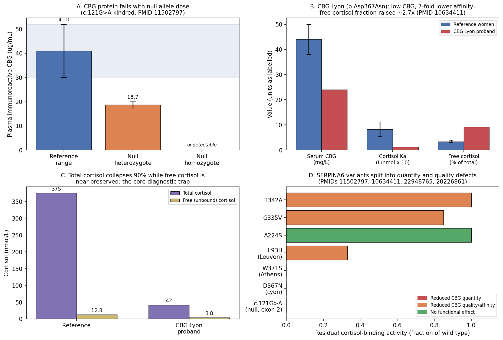
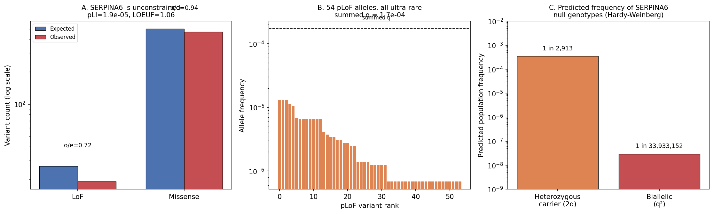
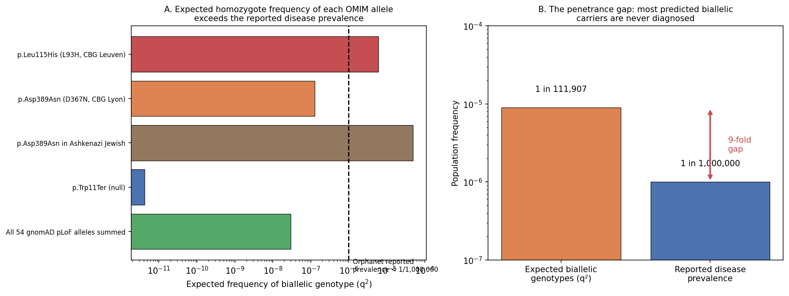
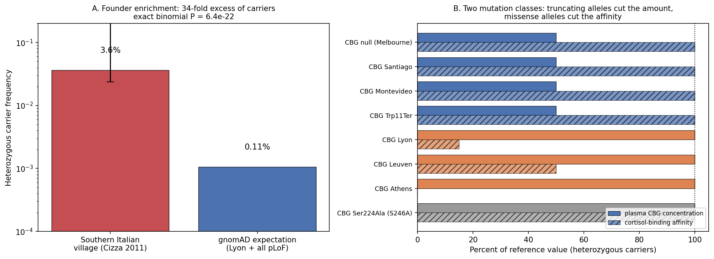
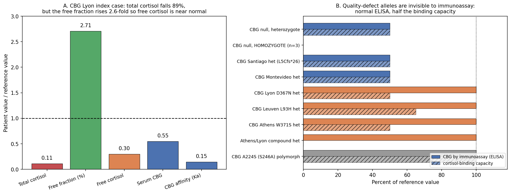
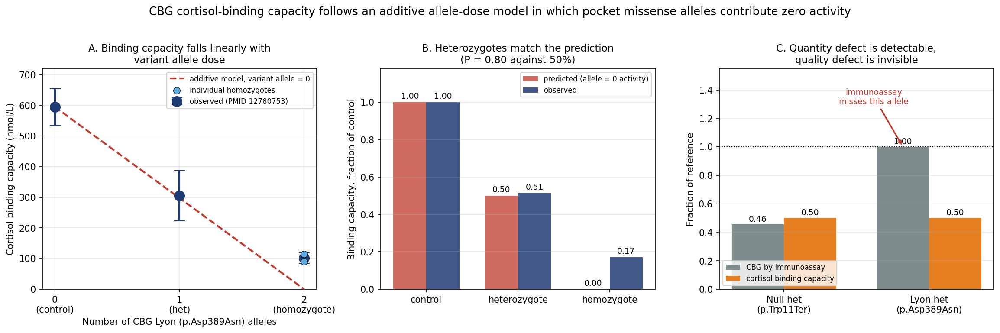
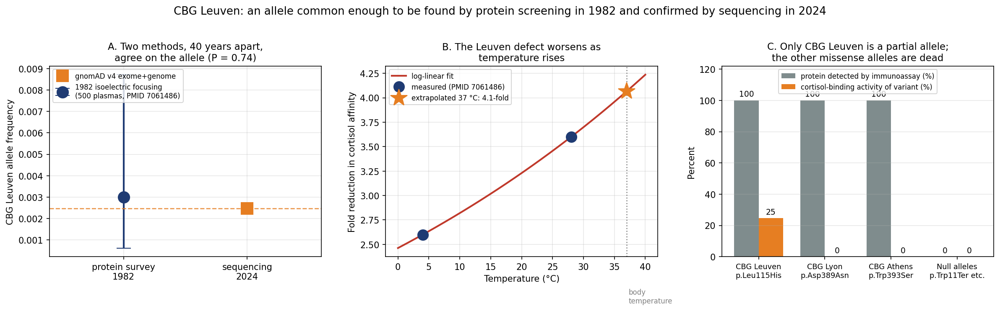

Corticosteroid-binding globulin (CBG, transcortin) deficiency is an inherited loss of the plasma carrier protein for cortisol, caused by variants in SERPINA6 (phenotype OMIM 611489). CBG is a liver-secreted glycoprotein of the serpin family that carries 80-90% of circulating cortisol but does not inhibit proteases; neutrophil elastase cleaves its reactive centre loop and thereby releases the bound steroid. Every disease allele described so far reduces function, in one of three ways: no protein is made (stop and frameshift alleles in or shortly after the signal-peptide region), the protein is made but poorly secreted (buried-core missense alleles), or the protein is secreted but binds cortisol weakly or not at all (missense alleles in or next to the steroid pocket). No gain-of-function or dominant-negative disease allele is known; two natural variants resist protease cleavage in vitro, with no known clinical effect. The biochemical trait is semidominant: heterozygotes for a null allele have about half the normal CBG concentration and homozygotes have none. The constant laboratory finding is a low total serum cortisol with normal free cortisol and normal ACTH, which is why affected people are easily misdiagnosed with adrenal or pituitary insufficiency. Chronic fatigue, chronic pain and low blood pressure have been reported in several kindreds, but penetrance is incomplete, carriers of common alleles are often symptom-free, and how symptoms could arise when free cortisol is normal is not established.
Ask a research question about Corticosteroid-Binding Globulin Deficiency. OpenScientist will conduct autonomous deep research using the Disorder Mechanisms Knowledge Base and PubMed literature (typically 10-30 minutes).
Do not include personal health information in your question. Questions and results are cached in your browser's local storage.
Conditions with similar clinical presentations that must be differentiated from Corticosteroid-Binding Globulin Deficiency:
name: Corticosteroid-Binding Globulin Deficiency
creation_date: "2026-11-26T18:30:00Z"
category: Mendelian
disease_term:
preferred_term: corticosteroid-binding globulin deficiency
term:
id: MONDO:0012675
label: corticosteroid-binding globulin deficiency
description: >-
Corticosteroid-binding globulin (CBG, transcortin) deficiency is an inherited
loss of the plasma carrier protein for cortisol, caused by variants in
SERPINA6 (phenotype OMIM 611489). CBG is a liver-secreted glycoprotein of the serpin
family that carries 80-90% of circulating cortisol but does not inhibit
proteases; neutrophil elastase cleaves its reactive centre loop and thereby
releases the bound steroid. Every disease allele described so far reduces
function, in one of three ways: no protein is made (stop and frameshift
alleles in or shortly after the signal-peptide region), the protein is made but poorly
secreted (buried-core missense alleles), or the protein is secreted but binds
cortisol weakly or not at all (missense alleles in or next to the steroid
pocket). No gain-of-function or dominant-negative disease allele is known;
two natural variants resist protease cleavage in vitro, with no known
clinical effect. The
biochemical trait is semidominant: heterozygotes for a null allele have about
half the normal CBG concentration and homozygotes have none. The constant
laboratory finding is a low total serum cortisol with normal free cortisol
and normal ACTH, which is why affected people are easily misdiagnosed with
adrenal or pituitary insufficiency. Chronic fatigue, chronic pain and low
blood pressure have been reported in several kindreds, but penetrance is
incomplete, carriers of common alleles are often symptom-free, and how
symptoms could arise when free cortisol is normal is not established.
classifications:
harrisons_chapter:
- classification_value: ENDOCRINOLOGY_METABOLISM
- classification_value: GENETICS_ENVIRONMENT_DISEASE
synonyms:
- CBG deficiency
- Transcortin deficiency
- Corticosteroid-binding globulin deficiency
- SERPINA6 deficiency
parents:
- Adrenal Gland Disorder
- Hereditary Disease
inheritance:
- name: Semidominant inheritance
description: >-
The biochemical trait follows gene dosage. Heterozygotes for a null allele
have about half the normal plasma CBG and intermediate total cortisol, and
homozygotes or compound heterozygotes have undetectable CBG or
cortisol-binding activity and very low total cortisol. The earliest family
study already described this as codominant or recessive, and Orphanet
lists the inheritance as semi-dominant. Clinical symptoms
do not follow the genotype as closely: they are reported in heterozygotes
and homozygotes alike and are absent in many carriers, so penetrance for
symptoms is incomplete.
inheritance_term:
preferred_term: Semidominant inheritance
term:
id: HP:0032113
label: Semidominant inheritance
penetrance: INCOMPLETE
expressivity: VARIABLE
evidence:
- reference: PMID:6499234
reference_title: "Total deficiency of corticosteroid-binding globulin."
supports: SUPPORT
evidence_source: HUMAN_CLINICAL
snippet: "The parents and a brother were found to have half the normal levels. This study indicates that CBG deficiency, a benign condition, is compatible with a codominant or recessive autosomal trait inheritance."
explanation: First family with complete CBG deficiency; obligate heterozygotes had half-normal CBG, which is the gene-dosage pattern.
- reference: PMID:11502797
reference_title: "Familial corticosteroid-binding globulin deficiency due to a novel null mutation: association with fatigue and relative hypotension."
supports: SUPPORT
evidence_source: HUMAN_CLINICAL
snippet: "Plasma immunoreactive corticosteroid-binding globulin was undetectable in null homozygotes, and mean corticosteroid-binding globulin levels were reduced by approximately 50% at 18.7 +/- 1.3 microg/ml (reference range, 30-52 microg/ml) in null heterozygotes"
explanation: In a 39-member kindred, null homozygotes had no CBG and heterozygotes about half, confirming semidominance of the biochemical trait.
- reference: PMID:22013108
reference_title: "CBG Santiago: a novel CBG mutation."
supports: SUPPORT
evidence_source: HUMAN_CLINICAL
snippet: "only four mutations have been described, often in association with fatigue and chronic pain, albeit with incomplete penetrance"
explanation: States that the clinical features are incompletely penetrant.
prevalence:
- population: Adult residents of one village in Calabria, southern Italy
measure_type: CARRIER_FREQUENCY
prevalence_class: ABOVE_1_IN_1000
rate_per_100000: 3636.0
notes: >-
18 of 495 screened adults were heterozygous for the null allele (6) or the
Lyon allele (12). This is a founder population and is not a general
population estimate.
evidence:
- reference: PMID:21795453
reference_title: "Clinical manifestations of highly prevalent corticosteroid-binding globulin mutations in a village in southern Italy."
supports: SUPPORT
evidence_source: HUMAN_CLINICAL
snippet: "Eighteen of 495 participants (3.6%, seven males and 11 females) had one of two function-altering CBG mutations."
explanation: Gives the carrier count and denominator for the village survey.
- population: Chinese adults undergoing routine health tests
measure_type: CARRIER_FREQUENCY
prevalence_class: ABOVE_1_IN_1000
rate_per_100000: 2778.0
rate_low: 2703.0
rate_high: 2857.0
notes: >-
Heterozygous carriers of the secretion-defective A51V allele, about 1 in
35 men and 1 in 37 women (1 in 36 taken as the midpoint). Carrier frequency of one allele, not disease
prevalence.
evidence:
- reference: PMID:22337907
reference_title: "High frequency of SERPINA6 polymorphisms that reduce plasma corticosteroid-binding globulin activity in Chinese subjects."
supports: SUPPORT
evidence_source: HUMAN_CLINICAL
snippet: "The surprisingly high frequency of heterozygous CBG A51V carriers was confirmed in 1011 Chinese men (1:35) and 1031 other women (1:37)."
explanation: Reports the carrier frequency of the A51V allele in a screened Chinese population.
- population: Europe
measure_type: POINT_PREVALENCE
prevalence_class: BELOW_1_IN_1000000
notes: >-
Orphanet class for diagnosed disease. It is far lower than the carrier
frequencies below and in gnomAD, which fits a condition that is usually
undiagnosed or without symptoms.
evidence:
- reference: ORPHA:199247
reference_title: "Corticosteroid-binding globulin deficiency"
supports: SUPPORT
evidence_source: OTHER
snippet: "<1 / 1 000 000 | Europe | Point prevalence | ORPHANET"
explanation: Orphanet epidemiology row for the disease.
- population: 500 plasma samples from individuals of Caucasian origin, screened by isoelectric focusing
measure_type: CARRIER_FREQUENCY
prevalence_class: ABOVE_1_IN_1000
rate_per_100000: 600.0
notes: >-
3 of 500 unselected samples were heterozygous for transcortin Leuven.
The samples were screened by protein pattern, not chosen for symptoms.
Carrier frequency of one allele, not disease prevalence.
evidence:
- reference: PMID:7061486
reference_title: "Transcortin Leuven: a variant of human corticosteroid-binding globulin with decreased cortisol-binding affinity."
supports: SUPPORT
evidence_source: HUMAN_CLINICAL
snippet: "This procedure was applied systematically to 500 plasma samples obtained from individuals of Caucasian origin."
explanation: Gives the denominator and the unselected nature of the survey.
- reference: PMID:7061486
reference_title: "Transcortin Leuven: a variant of human corticosteroid-binding globulin with decreased cortisol-binding affinity."
supports: SUPPORT
evidence_source: HUMAN_CLINICAL
snippet: "In three unrelated samples, a two-band pattern was obtained consisting of the normal band (pI 5.52) and a cathodic band of equal color intensity (pI 5.60)."
explanation: Gives the number of heterozygous carriers found.
pathophysiology:
- name: SERPINA6 Null and Truncating Alleles
biological_scale: MOLECULAR
role: trigger
description: >-
Stop and frameshift alleles that end translation in or shortly after the
22-residue signal-peptide region, so that no CBG polypeptide is produced
from the allele. Three are reported: p.Trp11Ter (CBG null, also called Adelaide),
p.Leu5CysfsTer26 (Santiago) and p.Val55GlyfsTer44 (Montevideo).
The first two stop within the signal peptide; Montevideo shifts the frame
at codon 55 and terminates at codon 98. Heterozygotes have about half the
normal plasma CBG, and homozygotes for p.Trp11Ter have none. Transcript
levels have not been measured for any of the three.
genes:
- preferred_term: SERPINA6
term:
id: hgnc:1540
label: SERPINA6
genetic_context:
gene:
preferred_term: SERPINA6
term:
id: hgnc:1540
label: SERPINA6
variant_origin: GERMLINE
functional_impact_category: LOSS_OF_FUNCTION
description: >-
Complete loss of product from the allele; semidominant effect on plasma
CBG concentration.
downstream:
- target: Reduced Hepatic CBG Secretion
causal_link_type: DIRECT
description: An allele that makes no CBG polypeptide removes its share of hepatic output.
evidence:
- reference: PMID:34308089
reference_title: "CBG Montevideo: A Clinically Novel SERPINA6 Mutation Leading to Haploinsufficiency of Corticosteroid-binding Globulin."
supports: SUPPORT
evidence_source: HUMAN_CLINICAL
snippet: "In the present study, CBG concentration was reduced by approximately 50% in heterozygous family members, similar to that previously observed for other null SERPINA6 pathogenic genetic variants"
explanation: Links a heterozygous null allele to a half-normal circulating CBG concentration across the reported null alleles.
evidence:
- reference: PMID:11502797
reference_title: "Familial corticosteroid-binding globulin deficiency due to a novel null mutation: association with fatigue and relative hypotension."
supports: SUPPORT
evidence_source: HUMAN_CLINICAL
snippet: "The novel exon 2 mutation led to a premature termination codon corresponding to residue -12 of the procorticosteroid-binding globulin molecule (c.121G-->A)."
explanation: Defines the null allele as a stop codon inside the signal peptide (residue -12 of the precursor, p.Trp11Ter in current nomenclature).
- reference: PMID:22013108
reference_title: "CBG Santiago: a novel CBG mutation."
supports: SUPPORT
evidence_source: HUMAN_CLINICAL
snippet: "a frameshift generating a stop codon within the signal peptide coding region (p.Leu5CysfsX26) and 50% reduced CBG levels in heterozygotes"
explanation: Second truncating allele in the signal peptide, with the same half-normal CBG in heterozygotes.
- reference: PMID:34308089
reference_title: "CBG Montevideo: A Clinically Novel SERPINA6 Mutation Leading to Haploinsufficiency of Corticosteroid-binding Globulin."
supports: SUPPORT
evidence_source: HUMAN_CLINICAL
snippet: "a 2 base-pair deletion leading to a frameshift and a premature stop codon with a 50% reduction in plasma CBG levels in heterozygotes"
explanation: Third truncating allele (Montevideo), again with half-normal CBG in heterozygotes.
- name: SERPINA6 Secretion-Defective Missense Alleles
biological_scale: MOLECULAR
role: trigger
description: >-
Missense alleles whose product binds cortisol normally, or was not tested
for binding, but is poorly produced or secreted by cells. A51V
(p.Ala73Val), I48N (p.Ile70Asn) and P246Q (p.Pro268Gln) belong here. All
three residues are fully buried in the crystal structures (relative
side-chain accessibility 0.00 to 0.03 in PDB 2VDY chain A, computed for
this entry). Ile48 and Ala51 lie on helix B and pack against the hinge of
the reactive centre loop where it inserts into beta-sheet A, the region
called the shutter in other serpins. In a global alignment with
alpha-1-antitrypsin (44% identity) they correspond to antitrypsin Ile57
and Ala60, on the same helix as the antitrypsin retention alleles Siiyama
(Ser53Phe) and Mmalton (Phe52 deletion). A folding defect with retention
in the hepatocyte is therefore the likely mechanism, but intracellular
retention or polymer formation has not been shown for CBG itself.
genes:
- preferred_term: SERPINA6
term:
id: hgnc:1540
label: SERPINA6
genetic_context:
gene:
preferred_term: SERPINA6
term:
id: hgnc:1540
label: SERPINA6
variant_origin: GERMLINE
functional_impact_category: LOSS_OF_FUNCTION
description: >-
Loss of secreted protein from the allele; the secreted fraction of A51V
retains normal steroid binding.
downstream:
- target: Reduced Hepatic CBG Secretion
causal_link_type: DIRECT
evidence:
- reference: PMID:22337907
reference_title: "High frequency of SERPINA6 polymorphisms that reduce plasma corticosteroid-binding globulin activity in Chinese subjects."
supports: SUPPORT
evidence_source: IN_VITRO
snippet: "Defects in CBG A51V production explain why plasma CBG levels in individuals heterozygous for this variant are approximately 50% lower than normal."
explanation: Ties the cell-culture secretion defect to the half-normal plasma CBG of heterozygous carriers.
evidence:
- reference: PMID:22337907
reference_title: "High frequency of SERPINA6 polymorphisms that reduce plasma corticosteroid-binding globulin activity in Chinese subjects."
supports: SUPPORT
evidence_source: IN_VITRO
snippet: "When expressed in Chinese hamster ovary cells, CBG A51V bound steroid normally, but its production/secretion was severely impaired"
explanation: Recombinant A51V separates a secretion defect from intact steroid binding.
- reference: PMID:25322275
reference_title: "Naturally occurring mutations of human corticosteroid-binding globulin."
supports: SUPPORT
evidence_source: IN_VITRO
snippet: "Comparison of CBG levels in cell extracts and media by Western blotting revealed that CBG I48N and CBG P246Q have secretion defects."
explanation: Two further naturally occurring missense variants with a secretion defect in cell culture.
- name: SERPINA6 Steroid-Binding-Defective Missense Alleles
biological_scale: MOLECULAR
role: trigger
description: >-
Missense alleles whose product is secreted but binds cortisol with reduced
affinity or not at all. Residue numbers in this literature, and in the
crystal structures, count from the first residue of the mature protein;
the precursor (HGVS) number is 22 higher. Distances below were computed
for this entry from PDB 2VDY chain A (cleaved human CBG with cortisol).
Two alleles change residues that touch the steroid: W371S (p.Trp393Ser,
Athens; 3.6 angstroms from cortisol) and R260L (p.Arg282Leu; 3.9
angstroms), and both abolish binding. D367N (p.Asp389Asn, Lyon) replaces a
buried aspartate (accessibility 0.02) 5.0 angstroms from the steroid that
contacts Phe369, Thr370, Trp371 and Asn238, on the strand that carries the
pocket residues Phe366, His368 and Trp371. G237V (p.Gly259Val) lies 10
angstroms from the steroid, next to the glycosylated Asn238 whose glycan
is needed for binding. L93H (p.Leu115His, Leuven) and H89Y (p.His111Tyr)
lie on helix D, 13 angstroms from the steroid; Leu93 contacts Phe369 and
Thr370 of the same pocket-bearing strand. In the normal protein the helix D
region couples the reactive centre loop to the binding site, and that
contact is a possible route for these two alleles, but how either lowers
binding has not been shown. E102G (p.Glu124Gly) is surface-exposed and 18 angstroms
away; why it lowers binding capacity is unexplained.
genes:
- preferred_term: SERPINA6
term:
id: hgnc:1540
label: SERPINA6
genetic_context:
gene:
preferred_term: SERPINA6
term:
id: hgnc:1540
label: SERPINA6
variant_origin: GERMLINE
functional_impact_category: LOSS_OF_FUNCTION
description: >-
Ranges from partial loss (Leuven, about 3-fold lower affinity) to
complete loss of steroid binding (G237V, W371S, R260L).
downstream:
- target: Loss of CBG Cortisol Binding
causal_link_type: DIRECT
evidence:
- reference: PMID:22948765
reference_title: "Two different corticosteroid-binding globulin variants that lack cortisol-binding activity in a greek woman."
supports: SUPPORT
evidence_source: IN_VITRO
snippet: "Recombinant CBG D367N and CBG W371S had no measureable cortisol-binding activity."
explanation: Recombinant protein carrying either substitution alone lacks cortisol binding, so the substitution is sufficient for the defect.
evidence:
- reference: PMID:1504007
reference_title: "A Leu----His substitution at residue 93 in human corticosteroid binding globulin results in reduced affinity for cortisol."
supports: SUPPORT
evidence_source: IN_VITRO
snippet: "the His93 mutation (Kd = 2.24 +/- 1.75 nM) reduced the cortisol binding affinity of CBG (mean +/- SD) significantly (P less than 0.024) when compared to normal CBG (Kd = 0.64 +/- 0.31 nM)"
explanation: Recombinant Leuven (L93H) protein has roughly 3.5-fold lower affinity for cortisol.
- reference: PMID:10634411
reference_title: "Novel human corticosteroid-binding globulin variant with low cortisol-binding affinity."
supports: SUPPORT
evidence_source: IN_VITRO
snippet: "Scatchard analysis demonstrated that the Asn367 substitution reduced the affinity of human CBG for cortisol by approximately 4-fold"
explanation: Recombinant Lyon (D367N) protein has reduced affinity in this expression system.
- reference: PMID:20610591
reference_title: "Novel corticosteroid-binding globulin variant that lacks steroid binding activity."
supports: SUPPORT
evidence_source: HUMAN_CLINICAL
snippet: "Individuals homozygous for the variant had serum CBG levels below the reference range when measured by RIA, but CBG was unmeasurable in cortisol-binding capacity assays."
explanation: G237V homozygotes have immunoreactive CBG that does not bind cortisol.
- reference: PMID:25322275
reference_title: "Naturally occurring mutations of human corticosteroid-binding globulin."
supports: SUPPORT
evidence_source: IN_VITRO
snippet: "Cortisol-binding affinity was markedly reduced for CBG H14Q and CBG H89Y, moderately decreased for CBG I279F, and undetectable for CBG R260L."
explanation: Systematic recombinant testing identifies further binding-defective natural variants.
- name: Reduced Hepatic CBG Secretion
biological_scale: CELLULAR
description: >-
CBG is made mainly by hepatocytes and secreted into plasma as a
glycoprotein. Null and secretion-defective alleles lower the amount of
CBG leaving the liver in proportion to the number of affected alleles.
cell_types:
- preferred_term: hepatocyte
term:
id: CL:0000182
label: hepatocyte
locations:
- preferred_term: liver
term:
id: UBERON:0002107
label: liver
biological_processes:
- preferred_term: protein secretion
term:
id: GO:0009306
label: protein secretion
modifier: DECREASED
genes:
- preferred_term: SERPINA6
term:
id: hgnc:1540
label: SERPINA6
downstream:
- target: Reduced Plasma Cortisol-Binding Capacity
causal_link_type: DIRECT
- target: Reduced Circulating CBG Concentration
causal_link_type: DIRECT
evidence:
- reference: PMID:3299377
reference_title: "Primary structure of human corticosteroid binding globulin, deduced from hepatic and pulmonary cDNAs, exhibits homology with serine protease inhibitors."
supports: SUPPORT
evidence_source: IN_VITRO
snippet: "Our results indicate that CBG mRNA is relatively abundant in the liver but is also present in the lung, testis, and kidney."
explanation: Establishes the liver as the main site of CBG synthesis.
- reference: PMID:3299377
reference_title: "Primary structure of human corticosteroid binding globulin, deduced from hepatic and pulmonary cDNAs, exhibits homology with serine protease inhibitors."
supports: SUPPORT
evidence_source: IN_VITRO
snippet: "This includes a predominantly hydrophobic, leader sequence of 22 residues that precedes the known NH2-terminal sequence of human CBG."
explanation: Defines the 22-residue signal peptide that directs secretion and that the null and Santiago alleles truncate.
- name: Loss of CBG Cortisol Binding
biological_scale: MOLECULAR
description: >-
The normal function of CBG is to bind one molecule of cortisol (or
progesterone) with nanomolar affinity in a surface pocket formed by
residues Ala18, Ser19, Val22, Gln232, Thr240, Phe242, Arg260, Ile263,
Asn264, Ser267, Phe366, His368 and Trp371 of the mature protein (the 13
residues within 4 angstroms of cortisol in both PDB 2VDY and 4C49,
computed for this entry). CBG has the serpin fold but does not inhibit
proteases. Its reactive centre loop is a substrate for neutrophil
elastase, and loop cleavage or partial loop insertion into beta-sheet A
lowers steroid affinity through helix D. Binding-defective alleles remove
or weaken this high-affinity site in the secreted protein.
molecular_functions:
- preferred_term: cortisol binding
term:
id: GO:1903794
label: cortisol binding
modifier: DECREASED
chemical_entities:
- preferred_term: cortisol
term:
id: CHEBI:17650
label: cortisol
genes:
- preferred_term: SERPINA6
term:
id: hgnc:1540
label: SERPINA6
pdb_structures:
- pdb_id: 2VDY
target_protein: Human corticosteroid-binding globulin, reactive-loop cleaved
method: X-ray diffraction
resolution_angstrom: 2.3
ligand: cortisol
description: >-
Cleaved human CBG with cortisol bound. Residues 336-349 of the reactive
loop are replaced by antitrypsin sequence in this construct.
publication: PMID:18513745
- pdb_id: 2VDX
target_protein: Human corticosteroid-binding globulin, reactive-loop cleaved
method: X-ray diffraction
resolution_angstrom: 1.84
description: Cleaved human CBG without steroid.
publication: PMID:18513745
- pdb_id: 4C49
target_protein: Human corticosteroid-binding globulin, reactive-loop cleaved
method: X-ray diffraction
resolution_angstrom: 2.7
ligand: cortisol
description: Cleaved human CBG with cortisol bound; carries the engineered T349R substitution.
- pdb_id: 4BB2
target_protein: Human corticosteroid-binding globulin, reactive-loop cleaved
method: X-ray diffraction
resolution_angstrom: 2.48
ligand: progesterone
description: Cleaved human CBG with progesterone bound.
- pdb_id: 4C41
target_protein: Human corticosteroid-binding globulin
method: X-ray diffraction
resolution_angstrom: 1.8
description: >-
Human CBG with an engineered disulphide between residues 100 and 236
(S100C, V236C) and the T349R substitution; no steroid bound.
downstream:
- target: Reduced Plasma Cortisol-Binding Capacity
causal_link_type: DIRECT
evidence:
- reference: PMID:22948765
reference_title: "Two different corticosteroid-binding globulin variants that lack cortisol-binding activity in a greek woman."
supports: SUPPORT
evidence_source: HUMAN_CLINICAL
snippet: "The proband had no measurable plasma cortisol-binding activity despite a CBG level of 273 nm by ELISA."
explanation: A compound heterozygote for two binding-defective alleles has normal-range immunoreactive CBG but no plasma cortisol-binding activity.
evidence:
- reference: PMID:18513745
reference_title: "The S-to-R transition of corticosteroid-binding globulin and the mechanism of hormone release."
supports: SUPPORT
evidence_source: IN_VITRO
snippet: "We report here the crystal structures of cleaved human CBG (cCBG) at 1.8-A resolution and its complex with cortisol at 2.3-A resolution."
explanation: Source of the experimental structures on which the variant placement is based.
- reference: PMID:18513745
reference_title: "The S-to-R transition of corticosteroid-binding globulin and the mechanism of hormone release."
supports: SUPPORT
evidence_source: IN_VITRO
snippet: "A connecting loop of helix D, which is in a helix-like conformation in native CBG, unwinds and grossly perturbs the hormone binding site following beta-sheet expansion in the cCBG structure"
explanation: Shows that the helix D region couples the reactive centre loop to the steroid site, which is the published role of this region in the normal protein; whether the helix D alleles Leuven and H89Y act through it is not shown.
- reference: PMID:19643161
reference_title: "Molecular and structural basis of steroid hormone binding and release from corticosteroid-binding globulin."
supports: SUPPORT
evidence_source: OTHER
quote_role: REVIEW_SYNTHESIS
snippet: "Corticosteroid-binding globulin (CBG), a non-inhibitory member of the serine proteinase inhibitor (serpin) super-family, is the high-affinity transport protein for glucocorticoids in vertebrate blood."
explanation: States the normal molecular function and that CBG is a non-inhibitory serpin.
- reference: PMID:2370299
reference_title: "A role for corticosteroid-binding globulin in delivery of cortisol to activated neutrophils."
supports: SUPPORT
evidence_source: IN_VITRO
snippet: "unlike A1-PI, CBG does not alter the activity of this enzyme, but is cleaved by it at a single location close to its carboxy-terminus, and this reduces its molecular size by 5 kDa with the concomitant release of more than 80% of CBG-bound cortisol"
explanation: Shows that CBG is a substrate and not an inhibitor of neutrophil elastase, and that cleavage releases the bound cortisol.
- reference: PMID:29273683
reference_title: "Functional implications of corticosteroid-binding globulin N-glycosylation."
supports: SUPPORT
evidence_source: IN_VITRO
snippet: "We now show that mutations of conserved N-glycosylation sites at N238 in human CBG and N230 in rat CBG disrupt steroid binding."
explanation: The glycan on Asn238 is required for steroid binding, which bears on the neighbouring G237V and D367N alleles.
- name: Reduced Plasma Cortisol-Binding Capacity
biological_scale: ORGANISM
description: >-
Whether CBG is missing or present but unable to bind, plasma loses
high-affinity cortisol-binding sites. In normal plasma 80-90% of cortisol
is bound to CBG; when CBG is absent the steroid redistributes to albumin
and the free fraction rises to a quarter or more of the total.
locations:
- preferred_term: blood plasma
term:
id: UBERON:0001969
label: blood plasma
biological_processes:
- preferred_term: hormone transport
term:
id: GO:0009914
label: hormone transport
modifier: DECREASED
chemical_entities:
- preferred_term: cortisol
term:
id: CHEBI:17650
label: cortisol
downstream:
- target: Low Total Cortisol with Preserved Free Cortisol
causal_link_type: DIRECT
evidence:
- reference: PMID:15904907
reference_title: "Plasma free cortisol fraction reflects levels of functioning corticosteroid-binding globulin."
supports: SUPPORT
evidence_source: HUMAN_CLINICAL
snippet: "Following heat inactivation of CBG or in the congenital absence of CBG, there is a shift in cortisol binding from CBG to albumin."
explanation: Shows what happens to cortisol distribution when CBG binding is lost.
- target: Loss of the CBG-Bound Cortisol Reservoir
causal_link_type: DIRECT
- target: Loss of Targeted Cortisol Delivery to Tissues
causal_link_type: INDIRECT_UNKNOWN_INTERMEDIATES
hypothesis_groups:
- cbg_targeted_tissue_delivery
evidence:
- reference: PMID:15904907
reference_title: "Plasma free cortisol fraction reflects levels of functioning corticosteroid-binding globulin."
supports: SUPPORT
evidence_source: HUMAN_CLINICAL
snippet: "In normal plasma free cortisol accounts for less than 6% of the total with 80-90% bound to corticosteroid-binding globulin (CBG) and the remainder associated albumin."
explanation: Gives the normal share of cortisol carried by CBG.
- reference: PMID:12780753
reference_title: "Hereditary corticosteroid-binding globulin deficiency due to a missense mutation (Asp367Asn, CBG Lyon) in a Brazilian kindred."
supports: SUPPORT
evidence_source: HUMAN_CLINICAL
snippet: "CBC was decreased in the two homozygotes as compared to heterozygotes and in both groups as compared to controls"
explanation: Plasma cortisol-binding capacity falls with the number of Lyon alleles.
- name: Low Total Cortisol with Preserved Free Cortisol
biological_scale: ORGANISM
description: >-
With fewer binding sites the bound pool shrinks and total cortisol falls,
while the hypothalamic-pituitary-adrenal axis, which senses free cortisol,
keeps free cortisol and ACTH in the normal range. Total cortisol
therefore under-reports adrenal function in this condition.
locations:
- preferred_term: blood plasma
term:
id: UBERON:0001969
label: blood plasma
chemical_entities:
- preferred_term: cortisol
term:
id: CHEBI:17650
label: cortisol
downstream:
- target: Low Total Serum Cortisol
causal_link_type: DIRECT
evidence:
- reference: PMID:11502797
reference_title: "Familial corticosteroid-binding globulin deficiency due to a novel null mutation: association with fatigue and relative hypotension."
supports: SUPPORT
evidence_source: HUMAN_CLINICAL
snippet: "Morning total plasma cortisol levels were less than 1.8 microg/dl in homozygotes and were positively correlated to the plasma corticosteroid-binding globulin level in heterozygotes."
explanation: Total cortisol tracks the CBG concentration across genotypes.
evidence:
- reference: PMID:10634411
reference_title: "Novel human corticosteroid-binding globulin variant with low cortisol-binding affinity."
supports: SUPPORT
evidence_source: HUMAN_CLINICAL
snippet: "an increase in the percentage of nonprotein-bound cortisol offsets the low cortisol levels to give approximately normal concentrations of free cortisol in serum"
explanation: Direct measurement in a Lyon homozygote of low total but near-normal free cortisol.
- reference: PMID:20610591
reference_title: "Novel corticosteroid-binding globulin variant that lacks steroid binding activity."
supports: SUPPORT
evidence_source: HUMAN_CLINICAL
snippet: "All mutant homozygotes have very low total serum cortisol, but normal free serum cortisol levels."
explanation: Same pattern in homozygotes for a variant with no steroid binding.
- name: Loss of the CBG-Bound Cortisol Reservoir
biological_scale: ORGANISM
description: >-
CBG-bound cortisol is a circulating store that is protected from
clearance. In people homozygous for a non-binding CBG variant, total
cortisol given intravenously is cleared faster and distributes into a
larger volume, while free-cortisol kinetics stay normal. The store that
would normally buffer and prolong a cortisol pulse is missing.
locations:
- preferred_term: blood plasma
term:
id: UBERON:0001969
label: blood plasma
chemical_entities:
- preferred_term: cortisol
term:
id: CHEBI:17650
label: cortisol
downstream:
- target: Blunted Stress-Evoked Free Glucocorticoid Rise
causal_link_type: INDIRECT_UNKNOWN_INTERMEDIATES
hypothesis_groups:
- cbg_reservoir_blunted_stress_surge
evidence:
- reference: PMID:22930537
reference_title: "Critical role of plasma corticosteroid-binding-globulin during stress to promote glucocorticoid delivery to the brain: impact on memory retrieval."
supports: SUPPORT
directness: INDIRECT
evidence_source: MODEL_ORGANISM
snippet: "our current article demonstrates that Cbg-/- insensitivity in memory retrieval after stress results from the blunted CORT response due to increased CORT clearance"
explanation: In knockout mice the authors attribute the blunted stress response to faster glucocorticoid clearance in the absence of the CBG-bound pool; this is mouse corticosterone, not human cortisol.
evidence:
- reference: PMID:21054475
reference_title: "Corticosteroid-binding globulin regulates cortisol pharmacokinetics."
supports: SUPPORT
evidence_source: HUMAN_CLINICAL
snippet: "When CBG binding is disrupted, FreeF retains normal PK characteristics, although CBG null patients lack a CBG-bound pool of readily releasable cortisol."
explanation: Human pharmacokinetic study in homozygotes for a non-binding CBG variant.
- reference: PMID:21054475
reference_title: "Corticosteroid-binding globulin regulates cortisol pharmacokinetics."
supports: SUPPORT
evidence_source: HUMAN_CLINICAL
snippet: "SerF CL and V(d) were significantly lower in the OCP group and increased in the CBG null, compared to HV."
explanation: Total-cortisol clearance and volume of distribution are increased when CBG cannot bind cortisol.
- name: Blunted Stress-Evoked Free Glucocorticoid Rise
biological_scale: ORGANISM
mechanism_confidence: HYPOTHETICAL
description: >-
Proposed link between the biochemical defect and symptoms: without a
CBG-bound store, free glucocorticoid is normal at rest but rises less
during stress, so tissues including the brain are under-exposed when
demand is highest. The evidence is from Cbg knockout mice. Human data are
limited to single patients and point both ways, and loss of the store
alone would not be expected to lower the free rise (see the hypothesis
record), so this node and the edges entering and leaving it are a
hypothesis, not an established mechanism.
downstream:
- target: Chronic Fatigue
causal_link_type: INDIRECT_UNKNOWN_INTERMEDIATES
hypothesis_groups:
- cbg_reservoir_blunted_stress_surge
evidence:
- reference: PMID:20022933
reference_title: "Plasma transcortin influences endocrine and behavioral stress responses in mice."
supports: SUPPORT
directness: INDIRECT
evidence_source: MODEL_ORGANISM
snippet: "Thus, transcortin deficiency leads to insufficient glucocorticoid signaling and altered behavioral responses after stress."
explanation: Mouse behavioural despair and learned helplessness after stress are offered as the counterpart of human fatigue; the step from mouse behaviour to human fatigue is an inference.
- target: Relative Hypotension
causal_link_type: INDIRECT_UNKNOWN_INTERMEDIATES
hypothesis_groups:
- cbg_reservoir_blunted_stress_surge
- target: Chronic Pain
causal_link_type: INDIRECT_UNKNOWN_INTERMEDIATES
hypothesis_groups:
- cbg_reservoir_blunted_stress_surge
evidence:
- reference: PMID:21795453
reference_title: "Clinical manifestations of highly prevalent corticosteroid-binding globulin mutations in a village in southern Italy."
supports: SUPPORT
directness: INDIRECT
evidence_source: HUMAN_CLINICAL
snippet: "suggest that CBG influences the endocrine and neurobehavioral response to stress, including the development of pain/fatigue syndromes"
explanation: The authors' interpretation of the pain association in carriers; it is a proposal, not a measured stress response.
- target: Exercise Intolerance
causal_link_type: INDIRECT_UNKNOWN_INTERMEDIATES
hypothesis_groups:
- cbg_reservoir_blunted_stress_surge
evidence:
- reference: PMID:20022933
reference_title: "Plasma transcortin influences endocrine and behavioral stress responses in mice."
supports: SUPPORT
evidence_source: MODEL_ORGANISM
snippet: "free corticosterone concentrations are normal at rest but present a reduced surge after stress in transcortin-deficient mice"
explanation: Defining observation for this node in Cbg-deficient mice.
- reference: PMID:22930537
reference_title: "Critical role of plasma corticosteroid-binding-globulin during stress to promote glucocorticoid delivery to the brain: impact on memory retrieval."
supports: SUPPORT
evidence_source: MODEL_ORGANISM
snippet: "under stress conditions, we observed a blunted surge of corticosterone (CORT) in plasma and no free CORT rise in the hippocampus of Cbg-/-"
explanation: Independent mouse experiment showing no stress-evoked rise in free corticosterone in the hippocampus.
- reference: PMID:40365551
reference_title: "Corticosteroid-binding Globulin Dysfunction Due to Homozygous SERPINA6 Lyon Variant in a Pediatric Patient."
supports: SUPPORT
directness: INDIRECT
evidence_source: HUMAN_CLINICAL
snippet: "The low stimulated free cortisol levels led us to consider mild adrenal insufficiency secondary to CBG dysfunction as the potential etiology of our patient's findings"
explanation: One Lyon homozygote had a low salivary cortisol rise after ACTH; two homozygous siblings did not, so this is weak support.
- reference: PMID:40365551
reference_title: "Corticosteroid-binding Globulin Dysfunction Due to Homozygous SERPINA6 Lyon Variant in a Pediatric Patient."
supports: REFUTE
evidence_source: HUMAN_CLINICAL
snippet: "ACTH stimulation testing with concurrent serum and salivary cortisol measurements demonstrated low baseline and stimulated serum cortisol and high baseline and stimulated salivary cortisol"
explanation: A homozygous sibling of the same proband had a high stimulated salivary (free) cortisol, the opposite of a blunted rise.
- reference: PMID:17245537
reference_title: "Haploinsufficiency of the SERPINA6 gene is associated with severe muscle fatigue: A de novo mutation in corticosteroid-binding globulin deficiency."
supports: REFUTE
evidence_source: HUMAN_CLINICAL
snippet: "we present a patient with severe muscle fatigue, normal blood pressure, and abnormal high saliva cortisol levels following a standardized stress test"
explanation: A symptomatic Lyon heterozygote had a high, not blunted, salivary cortisol response to stress.
- name: Loss of Targeted Cortisol Delivery to Tissues
biological_scale: TISSUE
mechanism_confidence: HYPOTHETICAL
description: >-
Proposed alternative link to symptoms. CBG releases cortisol where its
reactive centre loop is cleaved by neutrophil elastase, and has been
proposed to direct cortisol to particular tissues such as inflamed sites,
liver and brain. If so, loss of CBG would lower local cortisol exposure
without changing circulating free cortisol. The release mechanism is
established in vitro; a resulting tissue deficit in people with CBG
deficiency has not been measured.
cell_types:
- preferred_term: neutrophil
term:
id: CL:0000775
label: neutrophil
downstream:
- target: Hypoglycemia
causal_link_type: INDIRECT_UNKNOWN_INTERMEDIATES
hypothesis_groups:
- cbg_targeted_tissue_delivery
evidence:
- reference: PMID:34308089
reference_title: "CBG Montevideo: A Clinically Novel SERPINA6 Mutation Leading to Haploinsufficiency of Corticosteroid-binding Globulin."
supports: SUPPORT
directness: INDIRECT
evidence_source: HUMAN_CLINICAL
snippet: "CBG may play an important role in facilitating the hepatic regulation of glucose homeostasis with loss of targeted hepatic glucocorticoid delivery, compounding morning fasting hypoglycemia as observed in this case"
explanation: The authors' proposed explanation for hypoglycemia in one family; hepatic cortisol delivery was not measured.
evidence:
- reference: PMID:2370299
reference_title: "A role for corticosteroid-binding globulin in delivery of cortisol to activated neutrophils."
supports: SUPPORT
directness: INDIRECT
evidence_source: IN_VITRO
snippet: "These results suggest a physiological role for CBG in the delivery of cortisol to sites of inflammation."
explanation: Establishes elastase-triggered release as a normal property of CBG; whether its loss causes symptoms is the inference.
- reference: PMID:16980625
reference_title: "Hyporesponsiveness to glucocorticoids in mice genetically deficient for the corticosteroid binding globulin."
supports: SUPPORT
directness: INDIRECT
evidence_source: MODEL_ORGANISM
snippet: "our data suggest an active role for CBG in bioavailability, local delivery, and/or cellular signal transduction of glucocorticoids that extends beyond a function as a mere cargo transporter"
explanation: Knockout mice were hyporesponsive to glucocorticoid despite raised free corticosterone, which the authors read as a delivery function.
mechanistic_hypotheses:
- hypothesis_group_id: cbg_reservoir_blunted_stress_surge
hypothesis_label: Loss of the CBG-bound reservoir blunts the stress rise in free glucocorticoid
status: ALTERNATIVE
description: >-
Resting free cortisol is normal, but without the CBG-bound store free
hormone is proposed to rise less during stress, producing intermittent
tissue under-exposure and symptoms such as fatigue. The lost store is
shown in people, and two mouse knockout studies measured a smaller free
corticosterone rise after stress. The link between the two is not
established. In people without functional CBG only total cortisol is
cleared faster; free-cortisol kinetics are normal. If free hormone alone
is cleared, losing the buffer should make a stress pulse of free cortisol
higher and shorter with the same total exposure, not smaller, so the mouse
finding needs a further factor such as lower adrenal output. The one
stress test in a human carrier showed a high salivary cortisol response.
notes: >-
The mass-balance argument was examined in a provider hypothesis run and
re-derived in its assessment
(kb/hypotheses/Corticosteroid-Binding_Globulin_Deficiency/cbg_reservoir_blunted_stress_surge/);
that run is a simulation with assumed parameters and is not cited as
evidence here.
evidence:
- reference: PMID:21054475
reference_title: "Corticosteroid-binding globulin regulates cortisol pharmacokinetics."
supports: SUPPORT
directness: INDIRECT
evidence_source: HUMAN_CLINICAL
snippet: "When CBG binding is disrupted, FreeF retains normal PK characteristics, although CBG null patients lack a CBG-bound pool of readily releasable cortisol."
explanation: Human evidence for the first half of the hypothesis (the lost store), not for the blunted rise or for symptoms.
- reference: PMID:21054475
reference_title: "Corticosteroid-binding globulin regulates cortisol pharmacokinetics."
supports: REFUTE
directness: INDIRECT
evidence_source: HUMAN_CLINICAL
snippet: "PK parameters for FreeF and the salivary biomarkers were not different between the CBG null and HV"
explanation: Free cortisol given as hydrocortisone was handled normally by people without functional CBG, which argues against faster clearance of free hormone as the cause of a blunted rise.
- reference: PMID:31570737
reference_title: "Corticosteroid-Binding Globulin is expressed in the adrenal gland and its absence impairs corticosterone synthesis and secretion in a sex-dependent manner."
supports: SUPPORT
directness: INDIRECT
evidence_source: MODEL_ORGANISM
snippet: "CBG-deficiency reduced the expression of ACTH receptor, SRB1 and the main genes involved in the adrenal hormones synthesis"
explanation: Reduced adrenal steroidogenic gene expression in knockout mice is a candidate for the further factor a blunted free rise would need; secretion rate itself was not measured.
- reference: PMID:22930537
reference_title: "Critical role of plasma corticosteroid-binding-globulin during stress to promote glucocorticoid delivery to the brain: impact on memory retrieval."
supports: SUPPORT
evidence_source: MODEL_ORGANISM
snippet: "Overall, our data suggest that the impact of CBG genetic deficiency on various behavioral patterns reported previously stems from a smaller CORT reservoir in blood."
explanation: The mouse study that states the reservoir hypothesis.
- reference: PMID:30904918
reference_title: "Corticosteroid-Binding Globulin Deficiency Specifically Impairs Contextual and Recognition Memory Consolidation in Male Mice."
supports: SUPPORT
evidence_source: MODEL_ORGANISM
snippet: "These data indicate that circulating but not brain CBG influences contextual and recognition long-term memory in relation with glucocorticoid levels."
explanation: Mice lacking CBG only in brain were unaffected, which places the relevant pool in the circulation as the reservoir hypothesis requires.
- hypothesis_group_id: cbg_targeted_tissue_delivery
hypothesis_label: CBG delivers cortisol to specific tissues, and that delivery is lost
status: ALTERNATIVE
description: >-
CBG is proposed to carry cortisol to sites of protease activity and to
liver and brain, so that its loss causes local deficiency with normal
circulating free cortisol.
evidence:
- reference: PMID:34308089
reference_title: "CBG Montevideo: A Clinically Novel SERPINA6 Mutation Leading to Haploinsufficiency of Corticosteroid-binding Globulin."
supports: SUPPORT
directness: INDIRECT
evidence_source: HUMAN_CLINICAL
snippet: "provides further evidence of a phenotype whose pathophysiology is not yet understood but may represent a selective tissue deficiency of cortisol"
explanation: Statement of the tissue-deficiency hypothesis by the authors of the Montevideo report, who also say the pathophysiology is not understood.
- hypothesis_group_id: cbg_altered_cortisol_pulsatility
hypothesis_label: Altered ultradian cortisol pulsatility
status: ALTERNATIVE
description: >-
Without CBG buffering, the pattern of cortisol pulses reaching tissues
changes, and pulse pattern rather than mean free cortisol determines
glucocorticoid signalling. Rests on one symptomatic patient. A related
proposal is that unbuffered pulses are taller and briefer, and that such
pulses give less receptor occupancy for the same exposure; this has not
been tested, and the available animal experiment compares constant with
pulsatile delivery, not sharp with smooth pulses.
evidence:
- reference: PMID:20610591
reference_title: "Novel corticosteroid-binding globulin variant that lacks steroid binding activity."
supports: SUPPORT
directness: INDIRECT
evidence_source: HUMAN_CLINICAL
snippet: "The only biochemical feature to distinguish the symptomatic subject was increased cortisol pulsatility, and we suggest that this may influence glucocorticoid signaling and contribute to symptoms previously associated with CBG deficiency."
explanation: Of three G237V homozygotes only the symptomatic one had increased pulse frequency.
- reference: PMID:34375333
reference_title: "Corticosterone pattern-dependent glucocorticoid receptor binding and transcriptional regulation within the liver."
supports: SUPPORT
directness: INDIRECT
evidence_source: MODEL_ORGANISM
snippet: "despite the same overall amount of corticosterone infused, twice the number of transcripts were regulated by constant corticosterone infusion, when compared to pulsatile"
explanation: In adrenalectomised rats the pattern of corticosterone delivery changed liver gene regulation at equal dose, so pattern can matter; it does not test the pattern change expected in CBG deficiency.
- hypothesis_group_id: cbg_symptoms_ascertainment
hypothesis_label: Symptoms reflect ascertainment and CBG deficiency is clinically benign
status: ALTERNATIVE
description: >-
Index cases were tested because they had fatigue or low cortisol, so the
association with symptoms may be an artefact of how families were found.
A screening study of pregnant carriers of the common A51V allele, and the
first homozygotes described, reported no symptoms. Against this, the same
screening study found a female-skewed sex ratio in newborns of carrier
mothers, and a survey blind to genotype found more chronic pain in
carriers.
evidence:
- reference: PMID:17547679
reference_title: "Corticosteroid-binding globulin gene polymorphisms: clinical implications and links to idiopathic chronic fatigue disorders."
supports: SUPPORT
evidence_source: OTHER
quote_role: REVIEW_SYNTHESIS
snippet: "The limited numbers of reports raise the possibility of ascertainment bias as many cases presented with features suggesting cortisol deficiency."
explanation: Reviewers close to the original families name ascertainment bias as an open possibility.
- reference: PMID:19643166
reference_title: "Corticosteroid-binding globulin: the clinical significance of altered levels and heritable mutations."
supports: SUPPORT
evidence_source: OTHER
quote_role: REVIEW_SYNTHESIS
snippet: "One community-based study revealed that severe CBG mutations are rare in idiopathic fatigue disorders."
explanation: Looking from the symptom side, people with unexplained fatigue rarely carry severe SERPINA6 alleles.
- reference: PMID:25695888
reference_title: "Impact of corticosteroid-binding globulin deficiency on pregnancy and neonatal sex."
supports: SUPPORT
evidence_source: HUMAN_CLINICAL
snippet: "The A51V mothers did not differ from controls in body mass index, gestational age at delivery, duration of parturition, blood pressure, gravidity, infant birth weight and size, or placental weights, and reported no unusual clinical symptoms."
explanation: Carriers found by genotype-first screening in pregnancy had normal blood pressure and no reported symptoms.
- reference: PMID:25695888
reference_title: "Impact of corticosteroid-binding globulin deficiency on pregnancy and neonatal sex."
supports: REFUTE
evidence_source: HUMAN_CLINICAL
snippet: "The female-skewed SSR suggests that male fetal survival is compromised in CBG-deficient mothers."
explanation: The same screening study found fewer male newborns to carrier mothers, an effect that would not be expected if the deficiency were entirely benign.
- reference: PMID:21795453
reference_title: "Clinical manifestations of highly prevalent corticosteroid-binding globulin mutations in a village in southern Italy."
supports: REFUTE
evidence_source: HUMAN_CLINICAL
snippet: "The presence of either mutation conferred a propensity to chronic pain."
explanation: In a village survey that examined residents before genotyping, the authors concluded carriers were prone to chronic pain; the abstract gives no pain rate for non-carriers, so this is weak evidence against ascertainment.
phenotypes:
- category: Laboratory
name: Low Total Serum Cortisol
diagnostic: true
description: >-
Low morning and ACTH-stimulated total cortisol, often in the range seen
in adrenal insufficiency, with normal free cortisol and ACTH. Lowest in
homozygotes and compound heterozygotes.
phenotype_term:
preferred_term: Low total serum cortisol
term:
id: HP:0008163
label: Decreased circulating cortisol level
evidence:
- reference: PMID:11502797
reference_title: "Familial corticosteroid-binding globulin deficiency due to a novel null mutation: association with fatigue and relative hypotension."
supports: SUPPORT
evidence_source: HUMAN_CLINICAL
snippet: "Morning total plasma cortisol levels were less than 1.8 microg/dl in homozygotes and were positively correlated to the plasma corticosteroid-binding globulin level in heterozygotes."
explanation: Total cortisol by genotype in the largest kindred.
- reference: PMID:12780753
reference_title: "Hereditary corticosteroid-binding globulin deficiency due to a missense mutation (Asp367Asn, CBG Lyon) in a Brazilian kindred."
supports: SUPPORT
evidence_source: HUMAN_CLINICAL
snippet: "Cortisol levels in the only two homozygotes were lower than in heterozygotes and both were significantly lower as compared to controls"
explanation: Same gene-dosage relationship for the Lyon allele.
- category: Laboratory
name: Reduced Circulating CBG Concentration
description: >-
Immunoreactive CBG is about half normal in heterozygotes for null or
secretion-defective alleles and undetectable in null homozygotes. It can
be normal with binding-defective alleles, where only a cortisol-binding
capacity assay shows the defect.
phenotype_term:
preferred_term: Reduced circulating CBG concentration
term:
id: HP:6000243
label: Decreased circulating corticosteroid-binding globulin concentration
evidence:
- reference: PMID:11502797
reference_title: "Familial corticosteroid-binding globulin deficiency due to a novel null mutation: association with fatigue and relative hypotension."
supports: SUPPORT
evidence_source: HUMAN_CLINICAL
snippet: "Plasma immunoreactive corticosteroid-binding globulin was undetectable in null homozygotes, and mean corticosteroid-binding globulin levels were reduced by approximately 50% at 18.7 +/- 1.3 microg/ml (reference range, 30-52 microg/ml) in null heterozygotes"
explanation: CBG concentration by null-allele genotype.
- reference: PMID:22948765
reference_title: "Two different corticosteroid-binding globulin variants that lack cortisol-binding activity in a greek woman."
supports: SUPPORT
evidence_source: HUMAN_CLINICAL
snippet: "Analyses of CBG levels in this pedigree illustrate how immunoassays fail to accurately reflect cortisol-binding activity."
explanation: With binding-defective alleles the immunoassay concentration can be normal, which is why this finding is not universal.
- category: Constitutional
name: Chronic Fatigue
description: >-
The most often reported symptom, sometimes meeting criteria for chronic
fatigue syndrome and sometimes described as muscle fatigue or
post-exertional fatigue. Reported in heterozygotes and homozygotes.
Absent in many carriers, and not improved by hydrocortisone in the
Santiago kindred.
phenotype_term:
preferred_term: Chronic fatigue
term:
id: HP:0012432
label: Chronic fatigue
evidence:
- reference: PMID:11502797
reference_title: "Familial corticosteroid-binding globulin deficiency due to a novel null mutation: association with fatigue and relative hypotension."
supports: SUPPORT
evidence_source: HUMAN_CLINICAL
snippet: "Idiopathic chronic fatigue was present in 12 of 14 adult null heterozygote subjects (86%) and in 2 of 3 null homozygotes."
explanation: Frequency of fatigue among null-allele carriers in one kindred.
- reference: PMID:17245537
reference_title: "Haploinsufficiency of the SERPINA6 gene is associated with severe muscle fatigue: A de novo mutation in corticosteroid-binding globulin deficiency."
supports: SUPPORT
evidence_source: HUMAN_CLINICAL
snippet: "implicating a pathogenic role of variants of SERPINA6 in some cases of muscle fatigue"
explanation: Severe muscle fatigue in a Lyon heterozygote.
- category: Cardiovascular
name: Relative Hypotension
description: >-
Low blood pressure for age and sex, reported in the null kindred and in
several index cases. Not present in all families.
phenotype_term:
preferred_term: Hypotension
term:
id: HP:0002615
label: Hypotension
evidence:
- reference: PMID:11502797
reference_title: "Familial corticosteroid-binding globulin deficiency due to a novel null mutation: association with fatigue and relative hypotension."
supports: SUPPORT
evidence_source: HUMAN_CLINICAL
snippet: "11 of 19 subjects (54%) had a systolic blood pressure below the third percentile"
explanation: Blood pressure distribution among adults with the null allele.
- reference: PMID:10634411
reference_title: "Novel human corticosteroid-binding globulin variant with low cortisol-binding affinity."
supports: SUPPORT
evidence_source: HUMAN_CLINICAL
snippet: "We report here on a 43-yr-old woman, referred for chronic asthenia and hypotension"
explanation: Presenting features of the first Lyon homozygote.
- reference: PMID:12780753
reference_title: "Hereditary corticosteroid-binding globulin deficiency due to a missense mutation (Asp367Asn, CBG Lyon) in a Brazilian kindred."
supports: REFUTE
evidence_source: HUMAN_CLINICAL
snippet: "the two homozygous subjects in this kindred were both normotensive and only the proband presented with fatigue"
explanation: Both Lyon homozygotes in a second kindred had normal blood pressure, so hypotension is not a constant feature.
- category: Constitutional
name: Chronic Pain
description: >-
Chronic widespread or musculoskeletal pain, found in a population survey
of carriers who were examined without knowledge of genotype.
phenotype_term:
preferred_term: Chronic pain
term:
id: HP:0012532
label: Chronic pain
evidence:
- reference: PMID:21795453
reference_title: "Clinical manifestations of highly prevalent corticosteroid-binding globulin mutations in a village in southern Italy."
supports: SUPPORT
evidence_source: HUMAN_CLINICAL
snippet: "Of 12 Lyon participants (four males and eight females), eight (two males and six females) had chronic widespread pain"
explanation: Pain frequency among Lyon heterozygotes in the village survey.
- reference: PMID:21795453
reference_title: "Clinical manifestations of highly prevalent corticosteroid-binding globulin mutations in a village in southern Italy."
supports: SUPPORT
evidence_source: HUMAN_CLINICAL
snippet: "The presence of either mutation conferred a propensity to chronic pain."
explanation: The survey's conclusion for both the null and Lyon alleles.
- category: Constitutional
name: Exercise Intolerance
description: >-
Excessive fatigue after exertion, reported in the two childhood-onset
kindreds with truncating alleles.
phenotype_term:
preferred_term: Exercise intolerance
term:
id: HP:0003546
label: Exercise intolerance
evidence:
- reference: PMID:34308089
reference_title: "CBG Montevideo: A Clinically Novel SERPINA6 Mutation Leading to Haploinsufficiency of Corticosteroid-binding Globulin."
supports: SUPPORT
evidence_source: HUMAN_CLINICAL
snippet: "This was associated with low serum total cortisol and clinical features of hypoglycemia, exercise intolerance, chronic fatigue, and hypotension in the proband, a 7-year-old boy, and his affected mother."
explanation: Clinical features of the Montevideo family.
- reference: PMID:22013108
reference_title: "CBG Santiago: a novel CBG mutation."
supports: SUPPORT
evidence_source: HUMAN_CLINICAL
snippet: "The proband, a 9-yr-old male, had excessive postexertional fatigue, weakness, and migraine."
explanation: Clinical features of the Santiago proband.
- category: Metabolic
name: Hypoglycemia
description: >-
Recurrent fasting ketotic hypoglycemia from the neonatal period in the
Montevideo proband. Reported in this one family only.
phenotype_term:
preferred_term: Hypoglycemia
term:
id: HP:0001943
label: Hypoglycemia
evidence:
- reference: PMID:34308089
reference_title: "CBG Montevideo: A Clinically Novel SERPINA6 Mutation Leading to Haploinsufficiency of Corticosteroid-binding Globulin."
supports: SUPPORT
evidence_source: HUMAN_CLINICAL
snippet: "This was associated with low serum total cortisol and clinical features of hypoglycemia, exercise intolerance, chronic fatigue, and hypotension in the proband, a 7-year-old boy, and his affected mother."
explanation: Reports hypoglycemia in the Montevideo family; the paper notes it had not been reported with other SERPINA6 alleles.
biochemical:
- name: Total serum cortisol
presence: Decreased
biomarker_term:
preferred_term: cortisol
term:
id: CHEBI:17650
label: cortisol
loinc_term:
id: LOINC:2143-6
label: Cortisol [Mass/volume] in Serum or Plasma
notes: Decreased at baseline and after ACTH stimulation, in proportion to the loss of binding capacity.
evidence:
- reference: PMID:20610591
reference_title: "Novel corticosteroid-binding globulin variant that lacks steroid binding activity."
supports: SUPPORT
evidence_source: HUMAN_CLINICAL
snippet: "we observed very low baseline and stimulated total serum cortisol levels but normal free serum and salivary cortisol and plasma ACTH"
explanation: Baseline and stimulated total cortisol in homozygotes for a non-binding variant.
- name: Free and salivary cortisol
presence: Normal
biomarker_term:
preferred_term: cortisol
term:
id: CHEBI:17650
label: cortisol
notes: >-
The absolute free concentration is normal; the free fraction (percent of
total) is raised.
evidence:
- reference: PMID:20610591
reference_title: "Novel corticosteroid-binding globulin variant that lacks steroid binding activity."
supports: SUPPORT
evidence_source: HUMAN_CLINICAL
snippet: "we observed very low baseline and stimulated total serum cortisol levels but normal free serum and salivary cortisol and plasma ACTH"
explanation: Free serum and salivary cortisol are normal despite very low total cortisol.
- reference: PMID:15904907
reference_title: "Plasma free cortisol fraction reflects levels of functioning corticosteroid-binding globulin."
supports: SUPPORT
evidence_source: HUMAN_CLINICAL
snippet: "Similar elevations of the free cortisol fraction were noted in a patient with a rare genetically determined complete lack of CBG (mean 32% on frequent circadian sampling)."
explanation: The free fraction is about 32% of total in complete CBG deficiency, against less than 6% normally.
- name: Plasma ACTH
presence: Normal
biomarker_term:
preferred_term: corticotropin
term:
id: CHEBI:3892
label: corticotropin
evidence:
- reference: PMID:10634411
reference_title: "Novel human corticosteroid-binding globulin variant with low cortisol-binding affinity."
supports: SUPPORT
evidence_source: HUMAN_CLINICAL
snippet: "normal plasma ACTH levels (38-49 pg/mL; normal, <50 pg/mL)"
explanation: ACTH is not raised despite low total cortisol, showing intact feedback.
- name: Plasma cortisol-binding capacity
presence: Decreased
notes: >-
Measured with tritiated cortisol. It detects both low CBG concentration
and non-binding CBG, which an immunoassay for CBG does not.
evidence:
- reference: PMID:22948765
reference_title: "Two different corticosteroid-binding globulin variants that lack cortisol-binding activity in a greek woman."
supports: SUPPORT
evidence_source: HUMAN_CLINICAL
snippet: "their CBG levels by ELISA were normal, but corresponding cortisol-binding capacity measurements were 50% lower"
explanation: Lyon heterozygotes have normal immunoreactive CBG but half the binding capacity.
genetic:
- name: SERPINA6
gene_term:
preferred_term: SERPINA6
term:
id: hgnc:1540
label: SERPINA6
relationship_type: CAUSATIVE
variant_origin: GERMLINE
association: >-
Loss-of-function variants reduce plasma cortisol-binding capacity in a
gene-dosage manner. The link to the laboratory phenotype is consistent in
every family; the link to symptoms is incompletely penetrant.
notes: >-
Residue numbers in the older literature count from the first residue of
the mature protein; add 22 for the precursor (HGVS p.) number on UniProt
P08185. The PDB entries 2VDX, 2VDY, 4BB2,
4C41 and 4C49 use mature numbering. Population figures are from gnomAD
v4.1 (exomes and genomes combined), read on 2026-11-26. In gnomAD the gene
tolerates loss of function (pLI below 0.001; observed/expected
loss-of-function 0.72, 90% interval 0.50-1.06), which fits a trait with
little effect on reproductive fitness. No external body has classified
the gene-disease relationship: ClinGen has no gene-disease validity
record for SERPINA6 in the export cached in this repository, so
gene_disease_validity is left unset. AlphaMissense scores for the
experimentally binding-defective variants are mostly in the likely-benign
range (L115H 0.16, W393S 0.17, E124G 0.12, R282L 0.30), and only the
buried secretion-defective I70N (0.72) and P268Q (0.86) are called likely
pathogenic, so a benign in silico call does not exclude a binding defect
for this protein.
evidence:
- reference: PMID:11502797
reference_title: "Familial corticosteroid-binding globulin deficiency due to a novel null mutation: association with fatigue and relative hypotension."
supports: SUPPORT
evidence_source: HUMAN_CLINICAL
snippet: "We describe a 39-member Italian-Australian family with a novel complete loss of function (null) mutation of the corticosteroid-binding globulin gene."
explanation: Segregation of a null allele with the biochemical phenotype in a large kindred.
- reference: PMID:25322275
reference_title: "Naturally occurring mutations of human corticosteroid-binding globulin."
supports: SUPPORT
evidence_source: IN_VITRO
snippet: "Eight naturally occurring CBG mutants with abnormal production and/or function were identified."
explanation: Among natural missense variants tested, every change in production or steroid binding was a loss; two variants also resisted protease cleavage.
variants:
- name: SERPINA6 c.32G>A (p.Trp11Ter)
synonyms:
- CBG null
- CBG Adelaide
- c.121G>A (original report numbering)
type: nonsense
variant_type: single nucleotide variant
clinical_significance: PATHOGENIC
identifiers:
- ClinVar:VCV000016976
description: >-
Stop codon at residue 11 of the 22-residue signal peptide (residue -12
of the mature protein). No CBG is detectable in homozygotes. gnomAD
v4.1: 4 alleles in about 1.6 million. ClinVar lists it as pathogenic
without assertion criteria.
functional_effects:
- function: CBG synthesis
type: loss_of_function
description: No protein product; half-normal plasma CBG in heterozygotes.
evidence:
- reference: PMID:11502797
reference_title: "Familial corticosteroid-binding globulin deficiency due to a novel null mutation: association with fatigue and relative hypotension."
supports: SUPPORT
evidence_source: HUMAN_CLINICAL
snippet: "The novel exon 2 mutation led to a premature termination codon corresponding to residue -12 of the procorticosteroid-binding globulin molecule (c.121G-->A)."
explanation: Original description of the allele.
- name: SERPINA6 c.13del (p.Leu5CysfsTer26)
synonyms:
- CBG Santiago
type: frameshift
variant_type: deletion
description: >-
Frameshift at residue 5 of the signal peptide. gnomAD v4.1: 4 alleles,
all in the Admixed American group.
functional_effects:
- function: CBG synthesis
type: loss_of_function
description: No protein product; half-normal plasma CBG in heterozygotes.
evidence:
- reference: PMID:22013108
reference_title: "CBG Santiago: a novel CBG mutation."
supports: SUPPORT
evidence_source: HUMAN_CLINICAL
snippet: "SERPIN A6 sequencing detected a novel exon 2 single base deletion (c.13delC) leading to a frameshift generating a stop codon within the signal peptide coding region (p.Leu5CysfsX26)"
explanation: Original description of the allele.
- name: SERPINA6 c.164_165del (p.Val55GlyfsTer44)
synonyms:
- CBG Montevideo
type: frameshift
variant_type: deletion
clinical_significance: LIKELY_PATHOGENIC
identifiers:
- ClinVar:VCV001077111
description: >-
Two-base deletion in exon 2 that shifts the reading frame at precursor
residue 55, 13% of the way into the protein. gnomAD v4.1: 21 alleles
with one homozygote. ClinVar lists it as likely pathogenic without
assertion criteria.
functional_effects:
- function: CBG synthesis
type: loss_of_function
description: Predicted complete loss of product; half-normal plasma CBG in heterozygotes.
evidence:
- reference: PMID:34308089
reference_title: "CBG Montevideo: A Clinically Novel SERPINA6 Mutation Leading to Haploinsufficiency of Corticosteroid-binding Globulin."
supports: SUPPORT
evidence_source: HUMAN_CLINICAL
snippet: "A variant in SERPINA6 was found in heterozygous state: NM_001756.3, c.164_165del (p.V55fs, chr14: 94.780.821)"
explanation: Original description of the allele.
- reference: PMID:34308089
reference_title: "CBG Montevideo: A Clinically Novel SERPINA6 Mutation Leading to Haploinsufficiency of Corticosteroid-binding Globulin."
supports: SUPPORT
evidence_source: HUMAN_CLINICAL
snippet: "Plasma CBG levels were reduced approximately 50% in the proband and mother"
explanation: Biochemical consequence in the two carriers.
- name: SERPINA6 c.218C>T (p.Ala73Val)
synonyms:
- CBG A51V
type: missense
variant_type: single nucleotide variant
description: >-
Ala51 of the mature protein is fully buried on helix B (relative
accessibility 0.01 in PDB 2VDY) and packs against Ile48, Leu55, Leu175
and the reactive-loop hinge. The larger valine side chain is expected
to disturb this packing. The secreted protein binds cortisol normally.
gnomAD v4.1: allele frequency 1.3% in East Asian samples, with 9
homozygotes overall.
functional_effects:
- function: CBG secretion
type: loss_of_function
description: Severely impaired production or secretion in cell culture; normal steroid binding.
population_effects:
- population: Chinese adults (2287 anonymous workers screened in the source study)
ancestry_basis: NOT_STATED
comparator_stratum: populations in which SERPINA6 variants that disrupt CBG are considered rare
effect_differences:
- ALLELE_FREQUENCY
cohort_size: 2287
description: Heterozygous carriers were found at about 1 in 36, far more often than any other function-altering SERPINA6 allele.
evidence:
- reference: PMID:22337907
reference_title: "High frequency of SERPINA6 polymorphisms that reduce plasma corticosteroid-binding globulin activity in Chinese subjects."
supports: SUPPORT
evidence_source: HUMAN_CLINICAL
snippet: "The surprisingly high frequency of heterozygous CBG A51V carriers was confirmed in 1011 Chinese men (1:35) and 1031 other women (1:37)."
explanation: Carrier frequency in the screened Chinese population.
evidence:
- reference: PMID:22337907
reference_title: "High frequency of SERPINA6 polymorphisms that reduce plasma corticosteroid-binding globulin activity in Chinese subjects."
supports: SUPPORT
evidence_source: IN_VITRO
snippet: "When expressed in Chinese hamster ovary cells, CBG A51V bound steroid normally, but its production/secretion was severely impaired"
explanation: Functional characterization of the recombinant variant.
- name: SERPINA6 c.344T>A (p.Leu115His)
synonyms:
- CBG Leuven
- Transcortin Leuven
- L93H
type: missense
variant_type: single nucleotide variant
identifiers:
- dbSNP:rs113418909
- ClinVar:VCV000016974
description: >-
Leu93 of the mature protein lies on helix D, 13 angstroms from the bound
steroid, and contacts His89, His91, Phe369 and Thr370. It lowers
affinity about 3-fold by speeding dissociation. The residue does not
touch the steroid, and the route by which it acts is not established.
It is the most common function-altering
allele in Europeans: gnomAD v4.1 allele frequency 0.25% overall, with 3
homozygotes. ClinVar classifications conflict.
functional_effects:
- function: cortisol binding
type: partial_loss_of_function
description: About 3-fold lower affinity for cortisol; concentration not reduced.
evidence:
- reference: PMID:8212073
reference_title: "Decreased cortisol-binding affinity of transcortin Leuven is associated with an amino acid substitution at residue-93."
supports: SUPPORT
evidence_source: HUMAN_CLINICAL
snippet: "This mutation is located within exon 2 and alters the codon (CTC) normally associated with Leu-93 in the transcortin polypeptide to a codon (CAC) for histidine in the variant genes."
explanation: Molecular identification of transcortin Leuven in homozygotes.
- reference: PMID:7061486
reference_title: "Transcortin Leuven: a variant of human corticosteroid-binding globulin with decreased cortisol-binding affinity."
supports: SUPPORT
evidence_source: HUMAN_CLINICAL
snippet: "This lowered affinity is due to an enhanced dissociation rate of the transcortin-cortisol complex."
explanation: Kinetic basis of the reduced affinity in the original protein-level description.
- name: SERPINA6 c.371A>G (p.Glu124Gly)
synonyms:
- CBG E102G
type: missense
variant_type: single nucleotide variant
description: >-
Glu102 of the mature protein is surface-exposed and 18 angstroms from
the steroid in PDB 2VDY. The structural reason for the low binding
capacity is not known. gnomAD v4.1: allele frequency 0.05% in East
Asian samples.
functional_effects:
- function: cortisol binding
type: partial_loss_of_function
description: Produced normally, with abnormally low cortisol-binding capacity.
evidence:
- reference: PMID:22337907
reference_title: "High frequency of SERPINA6 polymorphisms that reduce plasma corticosteroid-binding globulin activity in Chinese subjects."
supports: SUPPORT
evidence_source: IN_VITRO
snippet: "CBG E102G was produced normally, but its cortisol-binding capacity was abnormally low"
explanation: Functional characterization of the recombinant variant.
- name: SERPINA6 c.776G>T (p.Gly259Val)
synonyms:
- CBG G237V
type: missense
variant_type: single nucleotide variant
description: >-
Gly237 of the mature protein is 10 angstroms from the steroid and
immediately precedes Asn238, whose N-glycan is required for steroid
binding and whose side chain contacts Asp367. A valine here is expected
to shift the two strands that form part of the pocket. gnomAD v4.1: 12
alleles, 9 of them South Asian.
functional_effects:
- function: cortisol binding
type: loss_of_function
description: Immunoreactive CBG present but no measurable cortisol-binding capacity in homozygotes.
evidence:
- reference: PMID:20610591
reference_title: "Novel corticosteroid-binding globulin variant that lacks steroid binding activity."
supports: SUPPORT
evidence_source: HUMAN_CLINICAL
snippet: "This results in a p.Gly237Val substitution that is predicted to influence the positioning of two β-sheets that constitute part of the CBG steroid-binding site."
explanation: Original description and the authors' structural interpretation; the residue number is in mature-protein numbering.
- name: SERPINA6 c.1165G>A (p.Asp389Asn)
synonyms:
- CBG Lyon
- D367N
type: missense
variant_type: single nucleotide variant
identifiers:
- dbSNP:rs28929488
- ClinVar:VCV000016975
description: >-
Asp367 of the mature protein is buried (relative accessibility 0.02) and
5.0 angstroms from cortisol in PDB 2VDY. Its carboxylate sits among
Phe94, Asn238, Phe369, Thr370, Trp371 and Ser372, on the strand that
carries the pocket residues Phe366, His368 and Trp371. Replacing the
charged group with an amide is expected to loosen this strand. Reports
of the size of the defect differ: about 4-fold lower affinity in the
original report, no measurable binding in a later report from the same
group, and almost no binding with increased heat sensitivity in an
independent study in human 293 cells. gnomAD v4.1: allele
frequency 0.036% overall and 0.7% in Ashkenazi Jewish samples. ClinVar
classifications conflict.
functional_effects:
- function: cortisol binding
type: partial_loss_of_function
description: Reduced to absent cortisol binding depending on the assay; plasma concentration low-normal.
evidence:
- reference: PMID:10634411
reference_title: "Novel human corticosteroid-binding globulin variant with low cortisol-binding affinity."
supports: SUPPORT
evidence_source: HUMAN_CLINICAL
snippet: "Direct sequencing of PCR-amplified exons encoding CBG revealed that the proband was homozygous for a polymorphism (GAC-AAC) in the codon for residue 367, which results in a Asp367-->Asn substitution."
explanation: Original description of the allele in a homozygote.
- reference: PMID:20226861
reference_title: "Effect of mutations of the human serpin protein corticosteroid-binding globulin on cortisol-binding, thermal and protease sensitivity."
supports: SUPPORT
evidence_source: IN_VITRO
snippet: "Certain mutants are almost devoid of cortisol binding activity (Q232R and CBG Lyon), some display higher sensitivity for heat inactivation (G335V, Q232R and CBG Lyon)"
explanation: Independent recombinant study finding near-complete loss of binding and reduced thermal stability.
- name: SERPINA6 c.1178G>C (p.Trp393Ser)
synonyms:
- CBG Athens
- W371S
- c.1282G>C (original report numbering)
type: missense
variant_type: single nucleotide variant
description: >-
Trp371 of the mature protein is one of the 13 residues in direct contact
with the steroid (3.6 angstroms from cortisol in PDB 2VDY chain A).
Replacing the indole with a serine hydroxyl removes a wall of the
pocket. Found in trans with CBG Lyon in the index patient, who had no
plasma cortisol-binding activity. The source report gives the change as
c.1282G>C; c.1178G>C is the same change counted from the start codon of
Ensembl transcript ENST00000341584 (codon 393, TGG to TCG).
functional_effects:
- function: cortisol binding
type: loss_of_function
description: No measurable cortisol binding by the recombinant protein.
evidence:
- reference: PMID:22948765
reference_title: "Two different corticosteroid-binding globulin variants that lack cortisol-binding activity in a greek woman."
supports: SUPPORT
evidence_source: HUMAN_CLINICAL
snippet: "A novel heterozygous c.1282G>C transversion in exon 5 of SERPINA6, resulting in a p.Trp393Ser (W371S) substitution, was identified in the proband"
explanation: Original description of the allele.
- name: SERPINA6 c.845G>T (p.Arg282Leu)
synonyms:
- CBG R260L
type: missense
variant_type: single nucleotide variant
description: >-
Arg260 of the mature protein contacts the steroid directly (3.9
angstroms from cortisol in PDB 2VDY, 3.2 angstroms from progesterone in
4BB2) and lies next to Asp23. Identified from sequence databases and
tested as recombinant protein; no affected family has been described.
The source names only the protein change; c.845G>T is the single-base
change that produces it in Ensembl transcript ENST00000341584 (codon
282, CGG to CTG).
functional_effects:
- function: cortisol binding
type: loss_of_function
description: Undetectable cortisol-binding affinity.
evidence:
- reference: PMID:25322275
reference_title: "Naturally occurring mutations of human corticosteroid-binding globulin."
supports: SUPPORT
evidence_source: IN_VITRO
snippet: "Cortisol-binding affinity was markedly reduced for CBG H14Q and CBG H89Y, moderately decreased for CBG I279F, and undetectable for CBG R260L."
explanation: Functional characterization of the recombinant variant.
diagnosis:
- name: Total and free cortisol measured together
description: >-
A low total cortisol with a normal free serum or salivary cortisol and a
normal ACTH points to a binding-protein defect and away from adrenal or
pituitary failure.
measurements:
- preferred_term: serum total cortisol
term:
id: LOINC:2143-6
label: Cortisol [Mass/volume] in Serum or Plasma
- preferred_term: salivary cortisol
term:
id: LOINC:2142-8
label: Cortisol [Mass/volume] in Saliva (oral fluid)
evidence:
- reference: PMID:11502797
reference_title: "Familial corticosteroid-binding globulin deficiency due to a novel null mutation: association with fatigue and relative hypotension."
supports: SUPPORT
evidence_source: HUMAN_CLINICAL
snippet: "Abnormal corticosteroid-binding globulin concentrations or binding affinity may lead to the misdiagnosis of isolated ACTH deficiency."
explanation: States the diagnostic pitfall that paired measurement avoids.
- reference: PMID:29194043
reference_title: "The role of corticosteroid-binding globulin in the evaluation of adrenal insufficiency."
supports: SUPPORT
evidence_source: OTHER
quote_role: REVIEW_SYNTHESIS
snippet: "total cortisol levels might not be the ideal way to assess adrenal function in all clinical circumstances"
explanation: Review of why total cortisol misleads when CBG concentration or affinity is abnormal, including SERPINA6 variants.
- name: CBG concentration with cortisol-binding capacity
description: >-
An immunoassay gives the CBG concentration; a cortisol-binding capacity
assay shows whether that CBG binds steroid. Both are needed, because
binding-defective variants can have a normal immunoassay result.
evidence:
- reference: PMID:22948765
reference_title: "Two different corticosteroid-binding globulin variants that lack cortisol-binding activity in a greek woman."
supports: SUPPORT
evidence_source: HUMAN_CLINICAL
snippet: "Analyses of CBG levels in this pedigree illustrate how immunoassays fail to accurately reflect cortisol-binding activity."
explanation: A pedigree in which immunoassay and binding capacity disagree.
- name: SERPINA6 sequencing
description: Sequencing of the SERPINA6 coding exons confirms the diagnosis and identifies the allele class.
diagnosis_term:
preferred_term: Genetic testing
term:
id: NCIT:C15709
label: Genetic Testing
evidence:
- reference: PMID:40365551
reference_title: "Corticosteroid-binding Globulin Dysfunction Due to Homozygous SERPINA6 Lyon Variant in a Pediatric Patient."
supports: SUPPORT
evidence_source: HUMAN_CLINICAL
snippet: "CBG deficiency or dysfunction should be considered in patients with unexplained adrenal insufficiency."
explanation: Gene-panel sequencing found homozygous CBG Lyon in a child first diagnosed with primary adrenal insufficiency; he stayed on hydrocortisone, and two homozygous siblings needed none.
differential_diagnoses:
- name: Secondary adrenal insufficiency (isolated ACTH deficiency)
description: >-
Also gives low total cortisol without raised ACTH. In CBG deficiency free
and salivary cortisol are normal and CBG or cortisol-binding capacity is
low.
distinguishing_features:
- Normal free serum or salivary cortisol in CBG deficiency
- Low CBG concentration or cortisol-binding capacity in CBG deficiency
evidence:
- reference: PMID:22013108
reference_title: "CBG Santiago: a novel CBG mutation."
supports: SUPPORT
evidence_source: HUMAN_CLINICAL
snippet: "Individuals with low CBG levels may be misdiagnosed as having secondary hypocortisolism."
explanation: Names the condition CBG deficiency is mistaken for.
treatments:
- name: Hydrocortisone Replacement
description: >-
Not an established treatment; three single-family reports disagree.
Hydrocortisone did not relieve fatigue in the Santiago kindred. It was
reported as effective, together with frequent meals, for the hypoglycemia
of the Montevideo proband. A Lyon homozygote with a low stimulated
salivary cortisol had symptoms when he stopped hydrocortisone that
resolved on restarting, while his two homozygous siblings were not
treated. Because total cortisol is low when free cortisol is normal,
replacement started on a total cortisol result alone may be unnecessary.
therapeutic_modality: SMALL_MOLECULE
treatment_term:
preferred_term: Pharmacotherapy
term:
id: NCIT:C15986
label: Pharmacotherapy
therapeutic_agent:
- preferred_term: hydrocortisone
term:
id: CHEBI:17650
label: cortisol
evidence:
- reference: PMID:22013108
reference_title: "CBG Santiago: a novel CBG mutation."
supports: REFUTE
evidence_source: HUMAN_CLINICAL
snippet: "Exogenous hydrocortisone had no effect on the fatigue."
explanation: Hydrocortisone did not improve fatigue in a child with a truncating allele.
- reference: PMID:34308089
reference_title: "CBG Montevideo: A Clinically Novel SERPINA6 Mutation Leading to Haploinsufficiency of Corticosteroid-binding Globulin."
supports: SUPPORT
evidence_source: HUMAN_CLINICAL
snippet: "Hydrocortisone treatment and regular frequent meals in the proband were effective in this case."
explanation: Reported benefit for hypoglycemic episodes in one child; hydrocortisone and frequent meals were given together, so their effects cannot be separated.
- reference: PMID:40365551
reference_title: "Corticosteroid-binding Globulin Dysfunction Due to Homozygous SERPINA6 Lyon Variant in a Pediatric Patient."
supports: SUPPORT
evidence_source: HUMAN_CLINICAL
snippet: "experienced symptoms of adrenal insufficiency (headache, decreased energy, nausea, abdominal pain), which resolved after restarting hydrocortisone"
explanation: Symptoms returned off treatment and resolved on it in one Lyon homozygote; the authors could not separate the effect on growth from constitutional delay of growth and puberty.
animal_models:
- name: Cbg knockout mouse (Petersen 2006)
species: Mouse
genotype: Serpina6 -/-
genes:
- preferred_term: Serpina6
term:
id: MGI:88278
label: Serpina6
description: >-
Targeted deletion of the mouse CBG gene. Serum has no corticosterone
binding activity. The mice show reduced activity described as fatigue and
an aggravated response to septic shock.
publication: PMID:16980625
modeled_mechanisms:
- target: Reduced Plasma Cortisol-Binding Capacity
relationship: RECAPITULATES
fidelity: MODERATE
model_scale: ORGANISM
description: Complete loss of serum glucocorticoid binding, as in human null homozygotes.
limitations: >-
The mouse glucocorticoid is corticosterone. This study found free
corticosterone about 10-fold raised at rest, whereas affected people
and a second mouse line have normal resting free glucocorticoid.
divergences:
- divergence_type: SPECIES_MISMATCH
materiality: QUALIFYING
description: >-
Mice circulate corticosterone, not cortisol, and the resting free
corticosterone in this line was reported as about 10-fold raised,
which is not seen in human CBG deficiency.
evidence:
- reference: PMID:16980625
reference_title: "Hyporesponsiveness to glucocorticoids in mice genetically deficient for the corticosteroid binding globulin."
supports: SUPPORT
evidence_source: MODEL_ORGANISM
snippet: "The absence of CBG resulted in a lack of corticosterone binding activity in serum and in an approximately 10-fold increase in free corticosterone levels in CBG-null mice"
explanation: Shows the loss of binding activity and the raised free corticosterone that differs from the human picture.
- target: Loss of Targeted Cortisol Delivery to Tissues
relationship: PARTIALLY_RECAPITULATES
fidelity: LOW
model_scale: ORGANISM
description: >-
The mice responded poorly to glucocorticoid although free corticosterone
was raised, which the authors read as loss of a delivery function.
limitations: >-
Glucocorticoid hyporesponsiveness is an indirect readout of delivery,
and the protease-triggered release step studied in human CBG may not
operate the same way in rodents.
divergences:
- divergence_type: SPECIES_MISMATCH
materiality: QUALIFYING
description: >-
Rat CBG does not undergo the stressed-to-relaxed transition after
cleavage of its reactive centre loop, so rodent CBG cannot be assumed
to release steroid by the mechanism described for the human protein.
The finding is for rat; mouse CBG has not been tested in this way.
evidence:
- reference: PMID:23300763
reference_title: "Corticosteroid-binding globulin: structure-function implications from species differences."
supports: SUPPORT
evidence_source: IN_VITRO
snippet: "rat CBG fails to undergo an S-to-R transition upon proteolytic cleavage of the RCL hinting that the S-to-R transition observed in human CBG is not a prerequisite for CBG function in rat"
explanation: Direct biophysical evidence for the species difference in the cleavage-triggered conformational change.
evidence:
- reference: PMID:16980625
reference_title: "Hyporesponsiveness to glucocorticoids in mice genetically deficient for the corticosteroid binding globulin."
supports: SUPPORT
directness: INDIRECT
evidence_source: MODEL_ORGANISM
snippet: "our data suggest an active role for CBG in bioavailability, local delivery, and/or cellular signal transduction of glucocorticoids that extends beyond a function as a mere cargo transporter"
explanation: The authors' interpretation of the hyporesponsive phenotype as a delivery function.
- name: Cbg knockout mouse (Richard 2010)
species: Mouse
genotype: Serpina6 -/- and Serpina6 +/-
genes:
- preferred_term: Serpina6
term:
id: MGI:88278
label: Serpina6
description: >-
Independent transcortin-deficient line studied with partial and total
deficiency. Total corticosterone is markedly reduced, free corticosterone
is normal at rest, and the free corticosterone rise after stress is
reduced, with increased immobility and learned helplessness.
publication: PMID:20022933
modeled_mechanisms:
- target: Low Total Cortisol with Preserved Free Cortisol
relationship: RECAPITULATES
fidelity: MODERATE
model_scale: ORGANISM
description: Reproduces low total with normal resting free glucocorticoid.
limitations: Corticosterone in the mouse stands in for cortisol in humans.
evidence:
- reference: PMID:20022933
reference_title: "Plasma transcortin influences endocrine and behavioral stress responses in mice."
supports: SUPPORT
evidence_source: MODEL_ORGANISM
snippet: "We show that CBG deficiency in mice results in markedly reduced total circulating corticosterone at rest and in response to stress."
explanation: Low total glucocorticoid in the deficient mice.
- target: Blunted Stress-Evoked Free Glucocorticoid Rise
relationship: RECAPITULATES
fidelity: MODERATE
model_scale: ORGANISM
description: >-
The mouse is where this mechanism was observed; whether it occurs in
affected people is the open question.
limitations: >-
Demonstrated in mice only. The few human reports that measured a stress
or ACTH response found a low free cortisol rise in one patient and a
normal or high one in others.
evidence:
- reference: PMID:20022933
reference_title: "Plasma transcortin influences endocrine and behavioral stress responses in mice."
supports: SUPPORT
evidence_source: MODEL_ORGANISM
snippet: "free corticosterone concentrations are normal at rest but present a reduced surge after stress in transcortin-deficient mice"
explanation: The measurement that defines the mechanism.
discussions:
- discussion_id: cbg_symptoms_with_normal_free_cortisol
kind: KNOWLEDGE_GAP
status: OPEN
prompt: >-
If free cortisol and ACTH are normal in CBG deficiency, by what mechanism,
if any, do SERPINA6 loss-of-function variants cause fatigue, pain and low
blood pressure?
rationale: >-
The laboratory phenotype is fully explained by loss of binding capacity.
The symptoms are not. Four explanations are on record (a lost reservoir
with a blunted stress rise, lost tissue delivery, altered pulsatility,
and ascertainment). Symptoms have been surveyed in carriers found by
genotype, but the stress response of free cortisol has not: it has been
measured only in individual patients, with a low rise in one and a normal
or high rise in others. Alleles
common enough to study exist: A51V in East Asia, Leuven in Europe, Lyon in
Ashkenazi Jewish populations.
attaches_to:
- phenotypes#Chronic Fatigue
- phenotypes#Chronic Pain
- phenotypes#Relative Hypotension
- pathophysiology#Blunted Stress-Evoked Free Glucocorticoid Rise
- pathophysiology#Loss of Targeted Cortisol Delivery to Tissues
proposed_experiments:
- experiment_id: cbg_genotype_first_stress_response
name: Genotype-first recall study of stress-evoked free cortisol in SERPINA6 carriers
experiment_design: HUMAN_OBSERVATIONAL
description: >-
Recall carriers of A51V, Leuven or Lyon from a population cohort by
genotype, with matched non-carriers, and measure salivary free cortisol
before and after a standardised psychosocial or exercise stressor,
together with validated fatigue and pain scales and ambulatory blood
pressure, all assessed without knowledge of genotype.
would_support:
- mechanistic_hypotheses#cbg_reservoir_blunted_stress_surge
would_refute:
- mechanistic_hypotheses#cbg_reservoir_blunted_stress_surge
supporting_outcome:
- A smaller stress-evoked rise in salivary free cortisol in carriers, scaling with allele dose and with fatigue score.
refuting_outcome:
- A normal or larger stress-evoked rise in carriers, or no excess of fatigue, pain or low blood pressure in carriers found by genotype.
evidence:
- reference: PMID:17547679
reference_title: "Corticosteroid-binding globulin gene polymorphisms: clinical implications and links to idiopathic chronic fatigue disorders."
supports: SUPPORT
evidence_source: OTHER
quote_role: REVIEW_SYNTHESIS
snippet: "A mechanism for the effect of CBG mutations on fatigue is not readily apparent because free cortisol levels are normal, although we speculate that CBG may have an effect on cortisol-brain transport."
explanation: States the gap directly.
- discussion_id: cbg_lyon_binding_defect_magnitude
kind: CONTROVERSY
status: OPEN
prompt: >-
Does CBG Lyon (p.Asp389Asn) retain about a quarter of normal cortisol
affinity, or does it not bind cortisol at all?
rationale: >-
Three recombinant studies disagree: about 4-fold lower affinity in
Chinese hamster ovary cells in the original report, no measurable binding
in a later study from the same group, and almost no binding with
increased heat sensitivity in human 293 cells. The answer changes whether
Lyon heterozygotes should be read as mildly or substantially deficient.
The buried position of Asp367 next to the glycosylated Asn238 suggests
the result may depend on temperature and on the glycoform made by the
expression system, but this has not been tested.
attaches_to:
- pathophysiology#SERPINA6 Steroid-Binding-Defective Missense Alleles
evidence:
- reference: PMID:10634411
reference_title: "Novel human corticosteroid-binding globulin variant with low cortisol-binding affinity."
supports: SUPPORT
evidence_source: IN_VITRO
snippet: "Scatchard analysis demonstrated that the Asn367 substitution reduced the affinity of human CBG for cortisol by approximately 4-fold"
explanation: The partial-defect result.
- reference: PMID:22948765
reference_title: "Two different corticosteroid-binding globulin variants that lack cortisol-binding activity in a greek woman."
supports: SUPPORT
evidence_source: IN_VITRO
snippet: "Recombinant CBG D367N and CBG W371S had no measureable cortisol-binding activity."
explanation: The complete-defect result.
notes: >-
No GeneReviews chapter covers corticosteroid-binding globulin deficiency or
SERPINA6; phenotypes were taken from the primary family reports and one
population survey. Structural statements in this entry (distances to the
steroid, residue contacts, relative solvent accessibility) were computed
for this entry with Biopython from chain A of the crystal structures of
reactive-loop-cleaved human CBG named in each statement; no structure of
intact human CBG without engineered substitutions is available, and the
signal peptide and reactive centre loop are low-confidence regions of the
AlphaFold model (mean pLDDT 32 and 50). The common coding polymorphism
p.Ser246Ala (gnomAD v4.1 allele frequency 0.48), written A224S or Ala-Ser224
in some papers with reference and alternate alleles swapped, does not change
cortisol binding and is not a disease allele; R64Q and R64W (p.Arg86) were
also produced and bound cortisol normally. Obesity was noted in early reports of complete deficiency but has not been
examined systematically and is not listed as a phenotype.
Deep research results are used as seeds for research; they do not undergo the same validation as the main records and may contain errors. How we use deep research.
Create: Corticosteroid-Binding Globulin Deficiency · 2026-11-28T08:56:20Z · View source
New entry for corticosteroid-binding globulin deficiency (MONDO:0012675, SERPINA6), curated from the stub and claim issue 19047 alongside a SERPINA6 gene review in ai4curation/ai-gene-review (branch claude/serpina6-cbg-coreview); the two were reconciled and agree on mechanism, numbering and variant classes. Sources. 30 primary and review papers were cached with `just fetch-reference` and read; PMID:34308089 was upgraded to PMC full text because the Montevideo variant name is not in its abstract. No GeneReviews chapter exists (`just check-genereviews`: NO_CHAPTER), ClinGen has no gene-disease validity record for SERPINA6 in the cached export. Structure and population analysis done for this entry (not taken from a report): UniProt P08185 features; PDB 2VDX, 2VDY, 4BB2, 4C41, 4C49 (Biopython NeighborSearch for residues within 4 A of the steroid and residue contacts, Shrake-Rupley relative accessibility, chain A); AlphaFold AF-P08185-F1 v6 pLDDT and AlphaMissense scores; global BLOSUM62 alignment to SERPINA1 and SERPINA7; gnomAD v4.1 constraint and allele counts through the gnomAD API; ClinVar classifications as carried by gnomAD. Every literature residue was checked against the canonical sequence in mature and precursor numbering. Two HGVS c. names not given in the sources (c.1178G>C, c.845G>T) were derived from the Ensembl ENST00000341584 coding sequence and are marked as such. Deep research. `just research-disorder openscientist` was run; the first job (2986bb4a-9d6b-4b39-93fa-861c7600f0bf) hit the 3600 s client timeout and was cancelled with no report. The re-run with a 7000 s timeout (job 2a7330fe-1795-4498-aab2-1cd3ab0293df) returned after the entry was written and the PR opened. Its report is research/Corticosteroid-Binding_Globulin_Deficiency-deep-research-openscientist.md (67 of 67 references resolved, 32 of 32 quotes found, `just preflight-dr` PASS). It was read as a check on the finished entry and agreed with it; five leads from it were then verified against the cached sources and added: the unselected 1982 survey that found 3 Leuven heterozygotes in 500 samples, the brain-specific knockout result, the review statement that severe alleles are rare in fatigue cohorts, the rat finding that cleavage does not trigger the serpin transition (as a model divergence), and the Orphanet record ORPHA:199247, which an earlier label search of the cache had missed. The report's NCIT suggestions for hydrocortisone, glucocorticoid therapy and estrogen therapy resolve to unrelated terms and were not used. The focused `just research-hypothesis openscientist ... cbg_reservoir_blunted_stress_surge` run (job b82348bb-1bde-4d3f-89de-c05fa183a69e) also returned. It argues from a simulation that loss of the CBG-bound store cannot by itself blunt the free cortisol rise. The run was assessed in kb/hypotheses/Corticosteroid-Binding_Globulin_Deficiency/cbg_reservoir_blunted_stress_surge/assessments/ (`just validate-hypothesis-assessment` passes), and its central calculation was reproduced with an independent script committed there. Its model code and manifest were not delivered, so no provider analysis is recorded as succeeded and the analysis-run gate was not applied. In the entry the reservoir hypothesis was restated and moved from EMERGING to ALTERNATIVE, with PMID:21054475 and PMID:31570737 added; the simulation itself is not cited as evidence. Co-review. After the companion session's own hypothesis run, the wording for the Leuven and H89Y variants was changed from acting through helix D to mechanism not established. Pre-PR review. A fresh-context review of the draft found eight points, all taken: the Montevideo allele terminates at codon 98, not in the signal peptide; an untested nonsense-mediated-decay statement was removed; the ascertainment hypothesis now cites the sex-ratio and blinded pain findings against it; the hydrocortisone and diagnosis text for PMID:40365551 was corrected (the proband stayed on treatment); the knowledge-gap rationale no longer says carriers were never studied genotype-first; the A51V carrier rate uses both sexes; and two snippets were replaced with sentences that carry their claims. Validation. `just validate` (schema, terms, references) passes with 111 of 111 snippets verified; the ungated whole-repo gates listed in CLAUDE.md pass, including check-gene-namespaces after the MGI row was resolved online; all 7 phenotypes are causally connected. The symptom mechanism is recorded as competing hypotheses and a KNOWLEDGE_GAP discussion, not as an established edge.
Corticosteroid-binding globulin (CBG) deficiency is caused by variants in SERPINA6 (HGNC:1540, chr14:94,304,245-94,323,401, GRCh38, minus strand), the gene encoding corticosteroid-binding globulin, also called transcortin. CBG is a 405-amino-acid precursor (383-residue mature protein) belonging to the serpin superfamily, made almost entirely by hepatocytes and secreted into plasma, where it binds 80-90% of circulating cortisol. Loss of CBG function produces a laboratory picture that mimics adrenal insufficiency: morning total serum cortisol falls to roughly one tenth of the reference range with normal ACTH and normal 24 h urinary free cortisol. The clinical picture is mild and consists mostly of fatigue, exercise intolerance, relative hypotension and chronic widespread pain.
Two mechanistically distinct classes of allele produce the disease, and they behave differently in the laboratory. Quantity defects are truncating alleles (for example c.32G>A p.Trp11Ter, the Italian-Australian null; c.13delC p.Leu5CysfsX26, CBG Santiago) that lower the amount of circulating protein and are detected by immunoassay. Quality defects are missense alleles in or near the steroid-binding pocket (CBG Lyon p.Asp389Asn, CBG Athens p.Trp393Ser) whose protein is produced and immunoreactive but has no measurable cortisol-binding activity, so an ELISA reports a normal CBG concentration while cortisol-binding capacity is halved per allele. A third allele, CBG Leuven p.Leu115His, is genuinely partial and works by increasing the dissociation rate of the transcortin-cortisol complex. Any diagnostic pathway built on immunoassay alone will miss the entire quality class.
The disease is classified as Mendelian, but the evidence assembled here supports reading it as the extreme tail of a continuous quantitative trait. SERPINA6 is unconstrained for loss of function in gnomAD v4 (pLI 1.9e-05, LOEUF 1.056); both OMIM allelic variants are population polymorphisms present in homozygous form in asymptomatic samples; expected biallelic genotype frequency exceeds the Orphanet prevalence by about 9-fold, capping penetrance near 11%; a founder effect concentrates two alleles 34-fold in one southern Italian village (observed carrier frequency 3.64% against an expected 0.106%, P = 6.4e-22); and an unbiased 1982 survey of 500 plasma donors found carriers and homozygotes by protein banding rather than by illness, at an allele frequency statistically indistinguishable from gnomAD (P = 0.74). The same locus is the only genome-wide significant determinant of morning plasma cortisol in 25,314 people. Severity is bounded by mass action: total cortisol falls 89% while the free fraction rises 2.71-fold, leaving free cortisol at 30% of reference, so even people with zero plasma cortisol-binding activity present with fatigue rather than adrenal crisis.
What the disease is. A deficiency of the plasma carrier protein for cortisol, caused by germline variants in SERPINA6. The adrenal gland, the hypothalamic-pituitary-adrenal axis and the glucocorticoid receptor are intact. What fails is the transport and timed delivery of cortisol in blood. Plasma immunoreactive CBG is reduced or absent in the quantity class and normal in the quality class, and cortisol-binding capacity is reduced in both.
Identifiers.
| Field | Value |
|---|---|
| Preferred name | Corticosteroid-binding globulin deficiency |
| MONDO | MONDO:0012675 |
| OMIM (phenotype) | 611489 |
| OMIM (gene/locus) | 122500 (SERPINA6), allelic variants .0001 to .0003 |
| Orphanet | ORPHA:199247 |
| Disease Ontology | DOID:0090030 |
| UMLS | C1852529 |
| GARD | 13101 |
| MeSH | C565152 (supplementary concept record) |
| ICD-10 | E27.8 (other specified disorders of adrenal gland) |
| ICD-11 | 5A76.Y |
| Causal gene | SERPINA6, HGNC:1540, NCBI Gene 866, Ensembl ENSG00000170099, MANE Select ENST00000341584.4 |
| Protein | UniProt P08185 (CBG_HUMAN), 405 aa precursor, 45,141 Da |
Synonyms. CBG deficiency; transcortin deficiency; corticosteroid-binding globulin deficiency; SERPINA6 deficiency; corticosteroid-binding globulin variant. Named alleles carry their own historical names: CBG Lyon, CBG Leuven, CBG Athens, CBG Santiago, CBG Montevideo, transcortin Leuven, transcortin Lyon.
Source of information. All human data come from aggregated disease-level resources (OMIM, Orphanet, ClinVar, gnomAD) and from individual published kindreds. There is no registry, no EHR-derived cohort and no natural history study. Every clinical description derives from fewer than ten extended families plus one population survey, so the total number of genotyped, phenotyped individuals is on the order of one hundred.
Primary cause. Germline variants in SERPINA6 that reduce either the plasma concentration of CBG or its cortisol-binding affinity. No infectious or toxic cause of the inherited form exists.
Genetic risk factors. The causal alleles are listed in section 4. Common regulatory variation at the same locus is a legitimate modifier candidate: the CORNET meta-analysis found the SERPINA6/SERPINA1 region to be the only genome-wide significant locus for morning plasma cortisol, with three partially independent signals, all affecting total plasma cortisol-binding activity (PMID: 25010111). A person carrying a rare pathogenic allele on a low-expression common haplotype would be expected to have less residual binding capacity than one carrying the same allele on a high-expression haplotype, though this interaction has not been tested directly.
Environmental and acquired risk factors. Acquired CBG reduction is far commoner than the genetic form and is additive with it. Reported causes include old age, obesity, metabolic syndrome, cirrhosis, sepsis, polytrauma, extensive burns and surgery (PMID: 40734295). In decompensated cirrhosis plasma CBG is 27% lower in Child-Pugh B and 40% lower in Child-Pugh C than in Child-Pugh A (PMID: 43074499). Glucocorticoid administration lowers CBG.
Protective and CBG-raising factors. Oral estrogen raises CBG substantially. In 24 healthy women stopping a combined oral contraceptive, CBG fell from 133 ± 20 mg/L to 59 ± 10 mg/L over six weeks, with normalisation complete by four weeks (PMID: 42339516). Estrogen therapy is the one readily available intervention that raises CBG in a carrier, although it has never been trialled as a treatment. At population level the direction of cardiovascular risk favours the low-CBG state: Mendelian randomization using SERPINA6/SERPINA1 instruments shows that 1 SD higher genetically predicted cortisol raises the odds of hypertension (OR 1.12, 95% CI 1.05-1.18) (PMID: 37667866) and atrial fibrillation (OR 1.20, 95% CI 1.06-1.35) (PMID: 33822969).
Gene-environment interaction. The clearest documented interaction is with inflammation, through the neutrophil elastase axis. Alpha-1-antitrypsin, encoded by SERPINA1 53 kb away on the same strand, inhibits the elastase that cleaves the CBG reactive centre loop. Human heterozygous carriers of deleterious SERPINA1 mutations have increased adipose tissue glucocorticoid levels and action, with systemic increases in free glucocorticoid independent of HPA axis activation (PMID: 39788946). A second interaction has been shown for a common variant: in the 2004 Pelotas birth cohort, cumulative exposure to harsh parenting predicted higher adolescent hair cortisol, with stronger associations in carriers of more copies of the rs11621961 T allele, a gene-dosage pattern (PMID: 41491671).
{{figure:plot_1.png|caption=Published CBG deficiency biochemistry by SERPINA6 genotype class: plasma CBG, total cortisol, free cortisol fraction and cortisol-binding affinity. The quantity class lowers measured CBG; the quality class leaves it normal while destroying binding.}}
The defining abnormality is a laboratory one. Clinical features are non-specific and incompletely penetrant.
| Phenotype | HPO term | Type | Onset | Severity | Course | Frequency | Quality of life |
|---|---|---|---|---|---|---|---|
| Decreased circulating CBG concentration | HP:6000243 | Laboratory | Congenital | Defining | Stable lifelong | 100% of quantity-class carriers, 0% of quality-class | None directly |
| Decreased circulating cortisol | HP:0008163 | Laboratory | Congenital | Marked (89% fall in the Lyon index case) | Stable | Near 100% of biallelic cases | None directly, but drives misdiagnosis |
| Fatigue / asthenia | HP:0012378 | Symptom | Childhood to adult | Mild to severe | Fluctuating, exertion-related | Commonest presenting symptom across kindreds | Main driver of impairment |
| Chronic widespread pain | HP:0003418, HP:0003326 | Symptom | Adult | Mild to moderate | Chronic | 11 of 18 village carriers (61%) | Substantial where present |
| Hypotension | HP:0002615 | Clinical sign | Adult | Mild, relative | Stable | 11 of 19 adults (54%) with the null allele had systolic BP below the third percentile (PMID: 11502797) | Low, occasional dizziness |
| Hypertension | HP:0000822 | Clinical sign | Adult | Mild | Stable | Reported in some kindreds; direction is inconsistent | Low |
| Exercise intolerance | HP:0003546 | Symptom | Childhood | Moderate | Fluctuating | CBG Montevideo proband and mother | Moderate |
| Hypoglycemia | HP:0001943 | Laboratory / symptom | Childhood | Moderate | Episodic | Single kindred (CBG Montevideo) | Moderate where present |
| Poor growth, delayed puberty | HP:0001510, HP:0000823 | Clinical sign | Childhood | Moderate | Progressive until recognised | Single pediatric Lyon homozygote | Moderate |
| Osteoarthritis with pain | HP:0002758 | Clinical sign | Adult | Mild | Progressive | 9 of 18 village carriers | Moderate |
| Migraine | HP:0002076 | Symptom | Childhood | Mild | Episodic | CBG Santiago proband | Low |
Note on three annotations I could not source. HPO annotation of OMIM:611489 includes hypokalemia (HP:0002900), decreased urinary potassium (HP:0012364) and anemia (HP:0001903). No published CBG kindred reports any of these, and the mechanism does not predict a mineralocorticoid-type electrolyte disturbance in humans, since the HPA axis and adrenal output are intact and urinary free cortisol is normal. Treat these three as low confidence.
Age of onset. The biochemical trait is present from birth. Symptoms are reported from age 7 upward, and the HPO adult-onset annotation (HP:0003581) reflects when people seek medical attention. Genotype effects on cortisol dynamics are detectable much earlier: a polygenic score from six CORNET SNPs predicted diurnal (P < 0.001) and stress-induced (P = 0.009) salivary cortisol in 186 eight-year-olds (PMID: 29679879).
Quality of life. No EQ-5D, SF-36 or PROMIS data exist for this disease. The Krupp fatigue scale was administered in the village survey (PMID: 21795453) but published only descriptively. The practical burden is fatigue plus the harm of misdiagnosis, since patients are commonly labelled adrenal insufficient and started on lifelong glucocorticoid replacement that does not help.
Causal gene. SERPINA6, HGNC:1540, OMIM gene 122500, 5 coding exons, MANE Select ENST00000341584.4, 405-aa precursor with a 22-aa signal peptide. Mature-protein numbering runs 22 residues behind precursor numbering, which is the source of most nomenclature confusion in this literature.
The allelic series.
| Allele | Precursor (HGVS p.) | Mature | dbSNP | Class | Functional consequence |
|---|---|---|---|---|---|
| Null (Italian-Australian) | p.Trp11Ter | not reported | not assigned | Quantity | No protein; CBG undetectable in homozygotes, about 50% in heterozygotes |
| CBG Santiago | p.Leu5CysfsX26 (c.13delC) | not reported | not assigned | Quantity | Frameshift, stop within the signal peptide; 50% reduction in heterozygotes |
| CBG Lyon | p.Asp389Asn | D367N | rs28929488 | Quality | Recombinant protein has no measurable cortisol-binding activity; ELISA normal |
| CBG Athens | p.Trp393Ser | W371S | not assigned | Quality | Replaces the tryptophan that anchors the steroid in the pocket; no measurable binding |
| CBG Leuven | p.Leu115His | L93H | rs113418909 | Partial quality | Increased dissociation rate of the transcortin-cortisol complex; 2.6-fold affinity loss at 4 °C, 3.6-fold at 28 °C |
| CBG A224S | p.Ser246Ala | A224S | rs2228541 | Polymorphism / modifier | Common; co-inherited in the Greek kindred |
| CBG Montevideo | not specified in the abstract | not reported | not assigned | Quantity | 50% reduction in plasma CBG |
Gene dosage is additive and the missense allele contributes zero. The Brazilian CBG Lyon kindred (10 family members over three generations plus 9 healthy volunteers) provides a full allele-dose series (PMID: 12780753). Cortisol binding capacity was 594.8 ± 59.5 nmol/L in 9 controls, 305.0 ± 81.4 in 8 heterozygotes and reported as "< 90 and 114" in the 2 homozygotes. If the variant allele contributes nothing, the heterozygote prediction is 0.5 × 594.8 = 297.4 nmol/L. The observed 305.0 (95% CI 236.9-373.1) does not differ from it (one-sample t = 0.264, df = 7, P = 0.80), giving an observed ratio of 0.513 against a predicted 0.500. Heterozygotes sit far below controls (t = -8.45, P = 4.4e-07, Cohen d = 4.11). The homozygote residual of 15-19% sits at the assay floor and is the expected low-affinity, high-capacity albumin component of plasma cortisol binding, not residual CBG function. Total cortisol tracks the same gradient: homozygotes 69 and 182 nmol/L, heterozygotes 267 ± 129, controls 459 ± 195, P < 0.05.
The two allele classes separate at the assay. Null heterozygotes had immunoreactive CBG of 18.7 ± 1.3 µg/mL against a reference range of 30-52 µg/mL, a ratio of 0.46 (PMID: 11502797). CBG Lyon heterozygotes had normal CBG by ELISA with cortisol-binding capacity 50% lower (PMID: 22948765). Both classes halve functional capacity; only the null class is visible to immunoassay.
{{figure:plot_6.png|caption=The additive allele-dose model for CBG cortisol-binding capacity tested across three kindreds, with the dissociation between immunoassay and binding assay. Binding capacity falls on the additive prediction line, and only the quantity class is detected by ELISA.}}
CBG Leuven, the one partial allele. The original 1982 description identified the variant by isoelectric focusing of neuraminidase-treated plasma and reported "a 2.6-fold reduced affinity for cortisol at 4 degrees C and a 3.6-fold reduced affinity at 28 degrees C. This lowered affinity is due to an enhanced dissociation rate of the transcortin-cortisol complex" (PMID: 7061486). The molecular lesion was mapped 11 years later: "This mutation is located within exon 2 and alters the codon (CTC) normally associated with Leu-93 in the transcortin polypeptide to a codon (CAC) for histidine in the variant genes" (PMID: 8212073). A log-linear fit to the two temperature points gives d(ln fold)/dT = 0.0136 per °C and extrapolates to a 4.07-fold deficit at 37 °C. That extrapolation rests on two calibration points and is indicative only, but it agrees with the 3-fold figure measured in carrier plasma (PMID: 19643166) and implies that cold-room biochemistry understates the physiological defect.
Allele frequencies (gnomAD v4).
| Variant | Global allele frequency | Notes |
|---|---|---|
| p.Leu115His (CBG Leuven) | 2.4595e-03 | 3 homozygotes in gnomAD |
| p.Asp389Asn (CBG Lyon) | 3.5811e-04 | 7.04e-03 in Ashkenazi Jewish, 2.60e-03 in Middle Eastern, 0 in East Asian and Finnish |
| All 54 catalogued pLoF alleles | 1.717e-04 summed | 1 pLoF homozygote present, no reported phenotype |
Constraint. pLI = 1.89e-05; observed/expected LoF = 19/26.4 = 0.720 (90% CI 0.502-1.056, LOEUF 1.056); missense o/e = 0.938 (473/504). SERPINA6 is unconstrained for both loss of function and missense.
Variant classification in ClinVar. 124 records for SERPINA6: 76 VUS, 22 Pathogenic (mostly large 14q contiguous-gene CNVs rather than SERPINA6 point variants), 3 Likely pathogenic. Only one SNV, c.32G>A p.Trp11Ter, is classified Pathogenic for this condition; c.164_165del is Likely pathogenic. Both OMIM missense alleles sit in "Conflicting classifications of pathogenicity". For a knowledge base entry, p.Leu115His and p.Asp389Asn are best described as quantitative risk and modifier alleles with a measurable effect on cortisol-binding capacity, not as fully penetrant pathogenic variants.
Somatic versus germline. All disease alleles are germline. No somatic SERPINA6 disease is described. SERPINA6 appears in tumour expression signatures (bladder cancer prognostic models, cervical cancer, glioma), but a candidate glioma biomarker role for SERPINA6 failed independent validation (PMID: 40131804).
Functional consequence. Pure loss of function in both classes. No gain of function and no dominant negative effect has been reported, consistent with CBG being a monomeric carrier whose variant product does not interfere with the wild-type product.
Modifier genes. SERPINA1, by controlling neutrophil elastase activity on the reactive centre loop, is the strongest mechanistic candidate (PMID: 39788946). Common SERPINA6 regulatory alleles (rs12589136, rs11621961, rs11629171, rs7161521, rs2749527, rs3762132, rs4900229) modify plasma cortisol and binding activity. Within the CBG Santiago family, symptom expression may have been modified by the polymorphic allele c.735G>T (PMID: 22013108).
Epigenetics. No disease-specific methylation or chromatin data exist for SERPINA6. In silico analysis suggests rs11621961 could influence gene expression and chromatin structure by altering motifs and acting as an eQTL in lymphoblastoid cell lines (PMID: 40267698). In mice, androgen deprivation increased hepatic Cbg mRNA about 6-fold with increased H3K27 acetylation at Cbg regulatory regions, showing the locus is subject to hormone-driven chromatin regulation (PMID: 39240718).
Chromosomal abnormalities. No disease-causing SERPINA6 structural variant is described. The Pathogenic CNVs in ClinVar that include SERPINA6 are large 14q32 contiguous-gene deletions whose phenotype is driven by other genes.
The inherited disease has no environmental cause, but acquired CBG depletion dominates clinical practice and is the main differential diagnosis. Any patient with a low CBG is far more likely to have cirrhosis, sepsis, obesity, burns or recent surgery than a SERPINA6 variant, and any patient with a high CBG is likely taking oral estrogen (PMID: 40734295).
Infection. Infection depletes CBG and converts the high-affinity to the low-affinity form. In 100 positive blood cultures against 100 controls, infected patients had lower total CBG, high-affinity CBG and low-affinity CBG, all P < 0.0001, and Pseudomonas aeruginosa infection showed the lowest total and low-affinity CBG despite the lowest inflammatory markers (PMID: 27887960). Whether a SERPINA6 carrier tolerates sepsis worse than a non-carrier is untested and is the most clinically important open question in this disease.
Lifestyle. Obesity and metabolic syndrome lower CBG. No smoking, alcohol or dietary exposure has been linked specifically to the genetic deficiency.
digraph cbg {
rankdir=LR;
node [shape=box, style=rounded, fontsize=10];
"SERPINA6 biallelic\nvariant" -> "Truncating allele\n(p.Trp11Ter)";
"SERPINA6 biallelic\nvariant" -> "Pocket missense\n(Lyon, Athens)";
"SERPINA6 biallelic\nvariant" -> "Leuven p.Leu115His\nfast off-rate";
"Truncating allele\n(p.Trp11Ter)" -> "Low immunoreactive\nCBG (seen by ELISA)";
"Pocket missense\n(Lyon, Athens)" -> "Normal CBG protein,\nzero binding";
"Low immunoreactive\nCBG (seen by ELISA)" -> "Reduced cortisol\nbinding capacity";
"Normal CBG protein,\nzero binding" -> "Reduced cortisol\nbinding capacity";
"Leuven p.Leu115His\nfast off-rate" -> "Reduced cortisol\nbinding capacity";
"Reduced cortisol\nbinding capacity" -> "Total cortisol\ndown 89%";
"Total cortisol\ndown 89%" -> "Free fraction up\n2.71-fold";
"Free fraction up\n2.71-fold" -> "Free cortisol 30%\nof reference";
"Free cortisol 30%\nof reference" -> "Normal ACTH, normal\nurinary cortisol";
"Total cortisol\ndown 89%" -> "False-positive adrenal\ninsufficiency";
"Reduced cortisol\nbinding capacity" -> "Loss of plasma\nreservoir";
"Loss of plasma\nreservoir" -> "Blunted stress\ncortisol surge";
"Blunted stress\ncortisol surge" -> "Fatigue, exercise\nintolerance";
"Reduced cortisol\nbinding capacity" -> "Loss of RCL-triggered\nsite delivery" [style=dashed];
"Loss of RCL-triggered\nsite delivery" -> "Chronic widespread\npain" [style=dashed];
"Loss of plasma\nreservoir" -> "Attenuated aldosterone\nresponse (mouse)" [style=dashed];
"Attenuated aldosterone\nresponse (mouse)" -> "Relative hypotension\n(54% of null carriers)" [style=dashed];
}
Crystal structures of intact rat CBG at 1.9 Å (PMID: 17644521), cleaved human CBG at 1.8 Å with its cortisol complex at 2.3 Å (PMID: 18513745), and human CBG with progesterone at 2.5 Å (PMID: 23300763) define the mechanism. PDB entries: 2VDX, 2VDY, 4BB2, 4C41, 4C49.
Cortisol-bound CBG adopts the stressed (S) serpin conformation with the reactive centre loop (mature Glu333-Ile354) fully expelled from beta-sheet A. Neutrophil elastase cleaves between Val344 and Thr345, and the cleaved loop inserts into the central beta-sheet, giving the relaxed (R) conformation. The coupling element is helix D: "A connecting loop of helix D, which is in a helix-like conformation in native CBG, unwinds and grossly perturbs the hormone binding site following beta-sheet expansion in the cCBG structure but shifts away from the binding site by more than 8 A following the binding of cortisol" (PMID: 18513745). The transmission path runs from the helix D loop through the s2/3B loop via Lys243 to the s4/5B loop flanking the binding site via Arg378 (PMID: 21325280).
The switch is allosteric rather than steric. Natural CBG loses only about 10-fold affinity on cleavage, and engineering shows the architecture can be pushed far past that: in the surrogate NewBG-III-allo, "the proteinase-triggered S-to-R transition leads to a greater than 200-fold reduction in ligand affinity" (PMID: 31103428). Evolution appears to have tuned CBG to partial release, which fits a carrier that must hand off some cortisol at an inflamed site while retaining a reservoir.
Mutagenesis establishes that insertion, not cleavage itself, abolishes binding: "Elastase-cleaved wild-type CBG or variants with substitutions at P15 and/or P16 (E334G/G335N or E334A) lost steroid binding completely, whereas deletion of Glu-334 resulted in no loss of steroid binding after RCL cleavage, presumably because this prevents its insertion into beta-sheet A" (PMID: 19011238).
CBG Athens maps onto this directly. Trp371 (mature; Trp393 precursor) sits inside the steroid pocket and anchors the ligand. Replacing it with serine destroys binding while leaving the protein immunologically intact, which is the cleanest structure-function correspondence in the allelic series and the structural reason the disease splits into quantity and quality classes.
CBG reads protease activity, temperature and its own glycan state. Elastase cleavage gives irreversible release. Pyrexia and acidosis give reversible release through increased Trp371 side-chain flexibility: "CBG:cortisol binding affinity was further reduced 3.5-fold at 39 °C relative to 37 °C, binding affinity was also reduced by acidosis for both haCBG and laCBG" (PMID: 33085168). Reactive centre loop O-glycans at Thr342 and Thr345 set how easily elastase can cleave (PMID: 40044123). CBG carries six N-glycosylation sites (precursor Asn31, 96, 176, 260, 330, 369), with about 30% of plasma CBG mass as N-linked oligosaccharide, and glycosylation at Asn260 is required for steroid binding (PMID: 19643161).
GO biological process: GO:0006704 glucocorticoid biosynthetic process (TAS, Reactome R-HSA-194002). GO molecular function: GO:0005496 steroid binding (IDA PMID: 18513745), GO:0140104 molecular carrier activity, GO:0004867 serine-type endopeptidase inhibitor activity. GO cellular component: GO:0005576 extracellular region, GO:0070062 extracellular exosome, GO:0005788 endoplasmic reticulum lumen. CHEBI: CHEBI:17650 cortisol, CHEBI:16973 corticosterone, CHEBI:27584 aldosterone, CHEBI:17026 progesterone. Reactome maps SERPINA6 to exactly two pathways, R-HSA-194002 glucocorticoid biosynthesis and R-HSA-9757110 prednisone ADME, with reaction R-HSA-1449687 "Corticosteroids bind to CBG in blood". KEGG assigns hsa:866 to hsa04900, neuroendocrine signaling pathway of the hypothalamus-pituitary axis.
No transcriptomic, proteomic, metabolomic or lipidomic profiling of CBG-deficient patients exists. GTEx v8 gives the expression baseline (section 7). Trans-tissue network analysis in STARNET shows cortisol-linked SNPs are trans-associated with genes in seven vascular and metabolic tissues at FDR 15%, with the highest representation of trans-genes in liver, subcutaneous fat and visceral abdominal fat, a subset putatively regulated by the glucocorticoid receptor (PMID: 37745713). No single-cell, spatial or CRISPR screen data address this gene in the disease context.
The anatomical answer is unusual for a Mendelian disease: there is no affected organ in the conventional sense. The site of the lesion is the hepatocyte secretory pathway, but the hepatocyte itself is normal, and the affected compartment is blood plasma.
Expression. GTEx v8 median TPM for ENSG00000170099: liver 180.71, pancreas 6.74, kidney medulla 4.99, kidney cortex 4.92, endocervix 2.35, ectocervix 1.46, transverse colon 1.18, fallopian tube 0.65, vagina 0.28, ovary 0.20, testis 0.16, breast 0.09, all remaining tissues at or below 0.07 TPM. Liver exceeds the next-highest tissue by 26.8-fold. Human Protein Atlas classifies SERPINA6 as "Tissue enriched (Liver)", expression cluster "Liver - Metabolism & Coagulation", single-cell "Cell type enhanced (Hepatocytes, Cholangiocytes)" with hepatocytes highest at 48.6 nTPM, subcellular classification "Secreted, Secreted to blood". Plasma concentration is 37-40 mg/L by immunoassay.
| Level | Structure | Ontology term | Involvement |
|---|---|---|---|
| Organ, primary | Liver | UBERON:0002107 | Site of synthesis; structurally and functionally normal |
| Fluid compartment | Blood plasma | UBERON:0001969 | Where the deficiency exists |
| Cell | Hepatocyte | CL:0000182 | Produces the defective or absent protein |
| Cell | Cholangiocyte | CL:1000488 | Secondary expression site |
| Subcellular | Endoplasmic reticulum lumen | GO:0005788 | Folding and glycosylation |
| Subcellular | Extracellular region | GO:0005576 | Functional location of the mature protein |
| Organ, secondary | Adrenal gland | UBERON:0002369 | Mouse data show reduced ACTH receptor and steroidogenic gene expression and loss of sexual dimorphism in Cbg-null animals (PMID: 31570737) |
| Organ, secondary | Hippocampus | UBERON:0002421 | Fails to receive the stress corticosterone surge in Cbg-null mice |
| Organ, secondary | Skeletal muscle | UBERON:0001134 | Clinical fatigue and exercise intolerance |
| Organ, secondary | Colon | UBERON:0001155 | Attenuated aldosterone-driven sodium conservation in Cbg-null mice |
Lateralization. Not applicable. The lesion is systemic and symmetric.
This single-source architecture makes the deficiency absolute once the gene fails: pancreas and kidney expression at 5-7 TPM against liver at 181 TPM cannot compensate. It also makes plasma CBG a sensitive readout of hepatic synthetic state generally, which is why acquired CBG deficiency from cirrhosis and sepsis is the main differential diagnosis.
Onset. The biochemical trait is congenital and present from birth. There is no neonatal crisis and no newborn screening signal. Onset of medical attention is bimodal: paediatric probands presenting with poor growth, delayed puberty, exercise intolerance, hypoglycemia or postexertional fatigue (ages 7-9 in the published kindreds), and adults presenting with chronic asthenia, hypotension or chronic widespread pain in the fourth to sixth decade.
Onset pattern. Insidious and chronic. No acute presentation has been reported.
Progression. Stable. The deficiency does not worsen, because it reflects a fixed genotype acting on a protein with a short, continuously replenished plasma pool. Symptoms fluctuate with exertion and intercurrent illness. No staging system exists and none is warranted.
Duration. Lifelong.
Critical periods. The genotype effect on cortisol dynamics is measurable by age 8, with a flatter diurnal slope and altered stress reactivity in high polygenic-score children (PMID: 29679879). The practical window of opportunity is diagnostic: recognising the condition before a patient is committed to lifelong glucocorticoid replacement for a misdiagnosed adrenal insufficiency.
Remission. No spontaneous remission. Acquired contributors (obesity, alcohol-related liver disease, oral estrogen withdrawal) are modifiable, so the measured CBG can move, but the genotype-determined component does not.
Prevalence. Orphanet lists ORPHA:199247 at under 1 per 1,000,000. That figure counts diagnosed cases and is inconsistent with the allele frequencies by roughly an order of magnitude.
Inheritance. Orphanet records the inheritance as "Semi-dominant", and HPO annotation of OMIM:611489 carries both HP:0000006 (autosomal dominant) and HP:0000007 (autosomal recessive). Both labels are defensible. Heterozygotes have a measurable intermediate biochemical phenotype at about 50% of normal binding capacity and may be symptomatic; homozygotes have the full biochemical phenotype. The mouse counterpart is the same: abnormal circulating corticosterone (MP:0005345) and behavioral despair (MP:0002573) are annotated to heterozygous as well as homozygous Serpina6 knockouts.
{{figure:plot_2.png|caption=SERPINA6 population genetics from gnomAD v4: summed pLoF frequency, carrier and biallelic prevalence estimates, named missense variant frequencies and the constraint metrics. pLI 1.9e-05 and LOEUF 1.056 place SERPINA6 among genes with no detectable depletion of truncating alleles.}}
Penetrance. Incomplete and low. Combining q for Leuven, Lyon and all 54 pLoF alleles gives 2.989e-03, an expected biallelic genotype frequency of 8.94e-06 (1 in 111,907) and a carrier frequency of 5.98e-03 (1 in 167). Against the Orphanet prevalence this is a 9-fold excess, implying an upper bound on penetrance of about 11% if ascertainment of diagnosed cases were complete. Within Ashkenazi Jewish samples, p.Asp389Asn homozygotes alone are expected at 4.96e-05 (1 in 20,177), a 49.6-fold excess.
{{figure:plot_3.png|caption=Hardy-Weinberg expected biallelic genotype frequencies for SERPINA6 disease alleles compared with the Orphanet reported prevalence of under 1 per 1,000,000. Expected genotypes exceed reported disease about 9-fold overall and about 50-fold in Ashkenazi Jewish samples.}}
Pre-genomic evidence makes the same point, free of ascertainment bias. Every CBG kindred except one entered the literature through a symptomatic proband, which makes most penetrance estimates circular. The 1982 original description of transcortin Leuven is the exception. Isoelectric focusing was "applied systematically to 500 plasma samples obtained from individuals of Caucasian origin", and three unrelated samples showed the variant two-band pattern; on family follow-up, "In a family of Polish origin two individuals homozygous for transcortin Leuven were found" (PMID: 7061486). Both homozygotes were identified by protein banding, not by illness.
That survey also audits the gnomAD arithmetic. Its implied allele frequency is 3.00e-03 (95% CI 6.20e-04 to 8.72e-03) against the gnomAD v4 value of 2.4595e-03, which predicts 2.45 carriers per 500. Observed 3 against expected 2.45 gives a two-sided binomial P = 0.74, a ratio of 1.22, and the modern estimate falls inside the 1982 confidence interval. A protein gel and a sequencing database, 40 years and two technologies apart, agree, so the 9-fold excess of expected biallelic genotypes does not rest on a database artefact.
{{figure:plot_7.png|caption=A 1982 isoelectric-focusing survey of 500 plasmas reproduces the modern gnomAD allele frequency for CBG Leuven (3.00e-03 against 2.46e-03, binomial P = 0.74), and a log-linear fit through the 2.6-fold deficit at 4 °C and 3.6-fold at 28 °C extrapolates to 4.07-fold at 37 °C.}}
Founder effect. A field survey of 495 adult residents of the southern Italian village from which the original null and Lyon kindred emigrated to Australia found that "Eighteen of 495 participants (3.6%, seven males and 11 females) had one of two function-altering CBG mutations. All were heterozygous for the null (n = 6) or Lyon mutations (n = 12)" (PMID: 21795453). Against the gnomAD expectation of 1.060e-03 for the same two allele classes, that is a 34-fold enrichment (exact one-sided binomial P = 6.39e-22, lower bound of the one-sided 95% CI on the observed frequency 2.36%). This is why the disease looked Mendelian. A single isolate produced enough affected relatives to resemble segregation of a dominant trait; outside it the same alleles are ordinary polymorphisms.
{{figure:plot_4.png|caption=Observed SERPINA6 carrier frequency in the southern Italian founder village against the gnomAD population expectation, with the full allelic series of reported human CBG variants. The 34-fold enrichment explains the Mendelian appearance of the disease.}}
Consanguinity and mosaicism. Consanguinity is not required, since the alleles are common enough to meet by chance, and homozygotes have arisen in outbred kindreds. No germline mosaicism is reported. One de novo CBG Lyon case exists: a patient with severe muscle fatigue was heterozygous for the Asn367 variant while both parents were homozygous for the wild-type aspartate allele (PMID: 17245537).
Genetic anticipation. Not applicable. There is no repeat expansion and no reported increase in severity across generations.
Carrier frequency. 1 in 167 globally for the combined disease-allele set; 1 in 2,913 for pLoF alleles alone; 3.64% in the southern Italian founder village.
Population and geographic distribution. CBG Lyon reaches 7.04e-03 in Ashkenazi Jewish and 2.60e-03 in Middle Eastern samples and is absent from East Asian and Finnish samples. CBG Leuven was first found in Caucasian plasma donors in Belgium with homozygotes in a family of Polish origin. Reported kindreds come from Italy, Australia, France, Brazil, Greece, Chile and Uruguay.
Sex ratio. No sex bias in genotype. The village survey found 7 male and 11 female carriers among 18. Mouse work shows CBG is androgen-suppressed and sexually dimorphic (PMID: 39240718, PMID: 25551181), and in mice CBG deficiency abolishes sex differences in despair-like behaviour (PMID: 25244639). Whether human females, who have higher baseline CBG, are biochemically buffered against a given allele is untested.
The central diagnostic trap. Total-cortisol-based tests are systematically false-positive for adrenal insufficiency. "We report on a pediatric patient presenting with poor growth and delayed puberty who was diagnosed initially with primary adrenal insufficiency following 2 failed ATCH stimulation tests with normal CBG and low stimulated salivary (free) cortisol" (PMID: 40365551). "Individuals with low CBG levels may be misdiagnosed as having secondary hypocortisolism" (PMID: 22013108).
Recommended laboratory sequence.
| Step | Test | LOINC where available | What it shows |
|---|---|---|---|
| 1 | Morning serum total cortisol | 2143-6 | Low, typically 10-20% of reference. Triggers the workup and causes the misdiagnosis |
| 2 | Plasma ACTH | 2141-0 | Normal. Excludes primary and secondary adrenal insufficiency |
| 3 | 24 h urinary free cortisol | 2147-7 | Normal. Confirms adrenal output is adequate |
| 4 | Salivary cortisol or cortisone | 2142-8 | The discriminating test. Reflects free hormone. Morning salivary cortisone had AUC 0.93 for adrenal insufficiency in 517 ACTH stimulation tests, above salivary cortisol (AUC 0.87, P = 0.00063) (PMID: 42806822) |
| 5 | Serum CBG by immunoassay | 32310-2 | Low in the quantity class, normal in the quality class |
| 6 | Plasma cortisol-binding capacity | no standard code | Reduced in both classes. The only functional assay that detects the quality class |
| 7 | Free serum cortisol by equilibrium dialysis or LC-MS/MS | no standard code | Confirms free cortisol is near-normal, separating CBG deficiency from true hypocortisolism |
| 8 | SERPINA6 sequencing | not applicable | Confirmatory |
Biomarkers. Plasma CBG concentration, plasma cortisol-binding capacity, the ratio of free to total cortisol, and the high-affinity to total CBG ratio. Assay caveats matter. Monoclonal antibodies raised against the reactive centre loop detect only intact CBG and give results discordant from total CBG assays (PMID: 21875666), yet mass spectrometry found no elastase-cleaved CBG in plasma and attributed ELISA discrepancies to structural differences altering epitopes (PMID: 30452386). Any CBG value should be interpreted with knowledge of which antibody the laboratory uses.
Imaging, electrophysiology, biopsy, pathology. Not applicable. Adrenal imaging is normal. No biopsy is indicated and no histopathological feature is described. Liver histology is normal.
Genetic testing. Single-gene SERPINA6 sequencing is sufficient once the biochemical pattern is established, since the phenotype is monogenic and the gene is small (5 coding exons). Whole exome and whole genome sequencing will detect the point variants but add nothing and risk reporting the common missense alleles as incidental findings of uncertain meaning. No commercial gene panel is built around this condition; SERPINA6 appears on some broad endocrine and adrenal panels. Chromosomal microarray, karyotyping and FISH have no role, since no disease-causing structural variant is described. Mitochondrial DNA testing and repeat expansion testing are not applicable.
Omics diagnostics. None validated. Mass spectrometric CBG glycoform profiling exists as a research assay and has prognostic value in sepsis (PMID: 41994485) but has not been applied to the genetic deficiency.
Clinical criteria. No society guideline, no DSM or ICD criteria. A practical working definition: low morning total cortisol with normal ACTH and normal urinary free cortisol, normal or near-normal salivary cortisol or cortisone, reduced plasma cortisol-binding capacity, and a biallelic or heterozygous SERPINA6 variant, after exclusion of acquired causes.
Differential diagnosis.
| Condition | Distinguishing feature |
|---|---|
| Primary adrenal insufficiency | High ACTH, low urinary free cortisol, low salivary cortisol, hyperpigmentation, electrolyte disturbance |
| Secondary adrenal insufficiency | Low or inappropriately normal ACTH with low free cortisol; other pituitary deficits |
| Cirrhosis and hepatoadrenal syndrome | Low CBG with liver disease; CBG 27-40% lower in Child-Pugh B and C; salivary cortisol often normal (PMID: 43074499, PMID: 41384215) |
| Septic shock | Acute low CBG with cleaved reactive centre loop and high free cortisol fraction |
| Nephrotic syndrome, burns, protein-losing enteropathy | Acute protein loss, low albumin alongside low CBG |
| Obesity and metabolic syndrome | Modest CBG reduction with the metabolic phenotype |
| Oral estrogen or combined contraceptive use | High CBG with falsely high total cortisol; normalises 4 weeks after stopping (PMID: 42339516) |
| Chronic fatigue syndrome and fibromyalgia | Overlapping symptoms. "One community-based study revealed that severe CBG mutations are rare in idiopathic fatigue disorders" (PMID: 19643166) |
Screening. No newborn screening, no population carrier screening, and neither is justified at a penetrance near 11% for a non-life-threatening condition. Cascade testing of first-degree relatives of a proband is reasonable, mainly so that a family member presenting with low cortisol is not started on glucocorticoids.
Survival and mortality. Normal life expectancy. No disease-specific mortality has been reported for the inherited form. The three reported null homozygotes and the functionally null Greek compound heterozygote are living adults: "The three reported null homozygotes demonstrate that complete CBG deficiency is not lethal, although it may be associated with hypotension and fatigue" (PMID: 19643166).
Severity ceiling. The most informative patient in the literature is a Greek woman who "had no measurable plasma cortisol-binding activity despite a CBG level of 273 nM by ELISA" (PMID: 22948765). She was compound heterozygous for CBG Lyon and CBG Athens in trans, and was ascertained through a low morning cortisol. A functional human knockout of cortisol binding who comes to attention because of a laboratory value sets a hard upper bound on severity.
{{figure:plot_5.png|caption=Corrected allelic series for SERPINA6 using primary-source binding data, with the mass-action compensation measured directly in the original CBG Lyon proband. Recombinant Lyon and Athens proteins have no measurable binding activity, so the residual capacity in heterozygotes comes from the wild-type allele.}}
Morbidity. Fatigue, exercise intolerance and chronic widespread pain are the burden. No disability outcomes, ICF codes or formal QoL instruments have been published for this disease.
Complications. The main avoidable complication is iatrogenic: unnecessary lifelong glucocorticoid replacement after a false-positive adrenal insufficiency diagnosis, carrying the usual risks of suppression, bone loss and weight gain.
Untested risk. The theoretically important unknown is response to severe inflammatory stress. Acquired CBG deficiency independently predicts death in septic shock, with ICU mortality 32.4% in patients with CBG below 200 nmol/L against 13.9% in those at or above 200 nmol/L, OR 2.97 (95% CI 1.19-7.41), P = 0.02, and adjusted OR 3.23 (95% CI 1.06-9.88) on multivariate analysis (PMID: 35152290). Whether a genetically CBG-deficient person entering septic shock faces the same elevated risk has never been studied. The Willnow Cbg-null mouse line has increased susceptibility to endotoxin shock (MP:0008735), which supports the concern.
Prognostic factors and biomarkers. None established for the inherited disease. Cortisol concentration itself does not predict outcome in septic shock, while CBG does (PMID: 30160799), which argues that delivery capacity rather than hormone level is the variable worth measuring.
There is no established treatment and no approved therapy. Management is diagnostic clarification, reassurance and symptom support.
| Intervention | NCIT term | Evidence |
|---|---|---|
| Hydrocortisone replacement | NCIT:C564 (hydrocortisone) | Negative. "Exogenous hydrocortisone had no effect on the fatigue" in the CBG Santiago kindred (PMID: 22013108). Not indicated, since free cortisol and ACTH are near-normal |
| Stress-dose glucocorticoid cover for major surgery or sepsis | NCIT:C177384 (glucocorticoid therapy) | No evidence either way. A defensible precaution in a biallelic carrier given the mouse endotoxin susceptibility data, but a judgement call rather than a guideline |
| Avoiding unnecessary glucocorticoid replacement | NCIT:C49236 (therapeutic procedure) | The strongest practical recommendation, following from the negative hydrocortisone result and the normal urinary free cortisol |
| Correcting acquired contributors (weight reduction, alcohol cessation, treating liver disease) | no single term | Plausible, untested in carriers. Acquired causes are additive with the genetic defect (PMID: 40734295) |
| Oral estrogen | NCIT:C468 (estrogen therapy) | Raises CBG about 2-fold (PMID: 42339516). Never trialled in CBG deficiency, and useless for the quality class, whose protein is already present and non-functional |
| Analgesia and graded exercise for chronic pain and fatigue | NCIT:C15329 (supportive care) | Symptomatic, by analogy with chronic widespread pain management |
| CBG protein repletion | no term assigned | Experimental. In a 2026 mouse cecal ligation and puncture study (n = 106), "CBG therapy reduced mortality to 17% (a relative decrease of 72%), reduced hypotension duration by 75%, and lowered organ damage markers" against 58% mortality in untreated animals (PMID: 41521757). Tested in acquired, not genetic, deficiency and not in humans |
Pharmacogenomics. CBG binds prednisolone, and SERPINA6 variation affects prednisolone protein binding. A population PK model in 60 children required explicit terms for prednisolone binding to albumin (Kd 200 µM) and to CBG (Kd 0.048 µM) plus the circadian rhythm of CBG (PMID: 41379279). A CBG-deficient patient given prednisolone will have a higher unbound fraction at a given total dose, which is a concrete, testable dosing implication. No CPIC or PharmGKB guideline covers SERPINA6.
Gene therapy, cell therapy, RNA therapy, immunotherapy, surgery, rehabilitation. None exist and none is in development for this indication. The liver-restricted, secreted nature of CBG would make it a tractable AAV gene-therapy target in principle, but the mildness of the phenotype makes the risk-benefit case poor.
Clinical trials. No trial registered for inherited CBG deficiency on ClinicalTrials.gov. No NCT identifier can be cited.
Treatment algorithm. Confirm the biochemical pattern (low total cortisol, normal ACTH, normal urinary free cortisol, normal or near-normal salivary cortisol). Exclude acquired causes of low CBG and oral estrogen use. Measure CBG and cortisol-binding capacity; a normal CBG with low capacity identifies the quality class. Sequence SERPINA6. If confirmed, stop or do not start glucocorticoid replacement, manage fatigue and pain symptomatically, consider stress-dose cover for major surgery or critical illness, and test first-degree relatives so they are not misdiagnosed.
Primary prevention. Not applicable to the genetic lesion. Avoiding or reversing acquired contributors (obesity, excess alcohol, metabolic syndrome) is sensible in a carrier because the effects are additive, though no study has tested whether this changes symptoms.
Secondary prevention. The useful target is diagnostic delay, not disease occurrence. Measuring salivary cortisol or cortisone, or free serum cortisol, before committing any patient with isolated low total cortisol and normal ACTH to glucocorticoid replacement would prevent most of the avoidable harm in this condition.
Tertiary prevention. Stress-dose glucocorticoid cover for major surgery or severe infection in biallelic carriers is a reasonable precaution based on the mouse endotoxin susceptibility data and the septic shock mortality association in acquired deficiency, but it has no direct human evidence in the genetic form.
Immunization. Not applicable. No vaccine-preventable component.
Screening programmes. No newborn screening and no population carrier screening is justified. Cascade testing within a known family is reasonable.
Genetic screening and counselling. Counselling should state three things plainly: penetrance is low (upper bound about 11% for biallelic genotypes), the clinical consequence even of complete CBG loss is fatigue and low blood pressure rather than adrenal crisis, and the main risk is misdiagnosis. Prenatal testing and preimplantation genetic diagnosis are technically possible and hard to justify for a condition of this severity. In the southern Italian founder village the carrier frequency is 3.64%, so local clinical awareness has more value than testing.
Risk stratification. Carriers of the quality-class alleles are the group most likely to be missed, because their immunoassay CBG is normal. Any laboratory reporting CBG should note that a normal value does not exclude the diagnosis.
Public health and environmental intervention. Not applicable.
Taxonomy and orthologs.
| Species | NCBI Taxon | Gene | NCBI Gene ID |
|---|---|---|---|
| Human | 9606 | SERPINA6 | 866 |
| Mouse | 10090 | Serpina6 (Cbg) | 12401 |
| Rat | 10116 | Serpina6 | 299270 (RGD:1595901) |
| Cattle | 9913 | SERPINA6 | 513746 |
| Pig | 9823 | SERPINA6 | 396736 |
| Dog | 9615 | SERPINA6 | 490838 |
| Rhesus macaque | 9544 | SERPINA6 | 701121 |
| Chimpanzee | 9598 | SERPINA6 | 453131 |
| Horse | 9796 | SERPINA6 | 100065007 |
The NCBI ortholog set spans 78 species. Alliance of Genome Resources calls the mouse and rat orthologs by 10 of 10 methods with best score.
Natural disease. No OMIA phene record exists. Advanced search by gene symbol SERPINA6 and by the term "transcortin" both return no phene records. There is no curated naturally occurring CBG deficiency in any non-human animal and no breed association, so no VBO identifier applies.
Veterinary relevance. CBG appears in veterinary disease as an acquired marker rather than an inherited defect. In canine chronic inflammatory enteropathies, disease severity was negatively correlated with transcortin/SERPINA6, behaving as a negative acute phase protein (PMID: 40659816). In sheep, mastitis lowered milk SERPINA6 (FC = 0.64, P = 0.038) (PMID: 42976622). In pigs, SERPINA6 sits inside a fine-mapped QTL for serum cortisol (PMID: 40874003) and associates with backfat thickness (PMID: 41666498). In Holstein cattle, SERPINA6 falls within a conserved heterozygous-enriched region linked to stress sensitivity (PMID: 39060982).
Comparative biology and a warning. The S-to-R transition is not universal. "CD measurements in combination with thermal unfolding experiments show that rat CBG fails to undergo an S-to-R transition upon proteolytic cleavage of the RCL hinting that the S-to-R transition observed in human CBG is not a prerequisite for CBG function in rat" (PMID: 23300763). Rodent experiments therefore test the carrier and reservoir functions of CBG but cannot test the cleavage-triggered delivery function as it operates in humans.
The steroid anchor also differs across classes. In avian and reptilian SerpinA6 the tryptophan that anchors the steroid in mammals is replaced by asparagine (PMID: 27026706). That residue is exactly the one mutated in CBG Athens. Birds additionally use CBG in place of sex hormone-binding globulin, which they lack. In ovo siRNA knockdown of SERPINA6 in broiler chickens reduced plasma CBG and raised total corticosterone, giving an elevated corticosterone/CBG ratio with altered late embryonic growth (PMID: 42385502). No CBG has been characterized in teleosts (PMID: 41180195).
Zoonotic potential and cross-species transmission. Not applicable. This is a non-transmissible genetic condition.
Mouse is the only phenotyped model. MGI:88278 (Serpina6, synonym Cbg), Chr12:103,612,889-103,623,471 minus strand, 52.98 cM, GRCm39, Ensembl ENSMUSG00000060807. MGI explicitly links the mouse gene to corticosteroid-binding globulin deficiency (DOID:0090030, OMIM:611489) with 2 mouse models, and 35 strains are available through IMSR.
Alleles. Nine exist. Two are phenotyped knockouts: Serpina6-tm1Tew (MGI:3664470, Willnow lab, PMID: 16980625) and Serpina6-tm1Mmp / tm1.1Mmp (MGI:4833628 / MGI:4833641, Moisan lab, PMID: 20022933). Five endonuclease-mediated alleles from commercial sources (em1Cya, em2Cya, em1Gpt, em17Gpt, em1Smoc) are unphenotyped. In(12)25Rk is a chemically induced inversion. A brain-specific conditional (CbgCamk) exists and is informative.
Mammalian Phenotype annotations.
| MP term | Phenotype | Genotypes |
|---|---|---|
| MP:0005345 | Abnormal circulating corticosterone level | tm1Tew/tm1Tew, tm1.1Mmp/+, tm1.1Mmp/tm1.1Mmp |
| MP:0005129 | Increased adrenocorticotropin level | tm1Tew/tm1Tew |
| MP:0008735 | Increased susceptibility to endotoxin shock | tm1Tew/tm1Tew |
| MP:0010210, MP:0008713 | Abnormal circulating cytokine level | tm1Tew/tm1Tew |
| MP:0001402 | Decreased locomotor activity | tm1Tew/tm1Tew |
| MP:0002573 | Behavioral despair | tm1.1Mmp/+, tm1.1Mmp/tm1.1Mmp |
| MP:0009758 | Impaired behavioral response to cocaine | tm1.1Mmp/tm1.1Mmp |
| MP:0005370 | Liver and biliary system: normal | tm1Tew/tm1Tew |
| MP:0005367 | Renal and urinary system: normal | tm1Tew/tm1Tew |
The heterozygous annotations for MP:0005345 and MP:0002573 matter: they show a gene-dosage effect matching the semi-dominant inheritance Orphanet records in humans.
Phenotype recapitulation. Good for the biochemical lesion, and the mouse extends the phenotype where human data are missing. Cbg-null mice show markedly increased corticosterone clearance and, under stress, "a blunted surge of corticosterone (CORT) in plasma and no free CORT rise in the hippocampus of Cbg-/-" (PMID: 22930537). Intrahippocampal corticosterone infusion restores the normal stress-induced retrieval impairment, which localises the defect to hormone delivery. "Impaired memory was observed in the Cbg KO but not in the CbgCamk KO in the CFC and the NORT without habituation when tested 24 h later" (PMID: 30904918), placing the functionally important CBG pool in the circulation rather than the brain. Chronic stress does not worsen the already-high baseline despair phenotype, and corticosterone stays low and unaltered under both unpredictable chronic mild stress and social defeat (PMID: 27153522). Mineralocorticoid signalling is attenuated: after sodium restriction, "In CBG⁻(/)⁻ mice this up-regulation was greatly attenuated as seen in a markedly reduced amiloride-sensitive short circuit current (reduced by ∼50%)" (PMID: 20969731). The adrenal gland is itself affected: "CBG-deficient mice show decreased total corticosterone levels with missing of classical sexual dimorphism, increased free corticosterone, higher adrenal gland size and altered HPA axis response to stress" (PMID: 31570737). Hippocampal signalling is perturbed, with elevated pY216-GSK3β and phosphorylated tau in cbg-/- mice (PMID: 33592009).
Model limitations. Three stand out. Rat CBG does not undergo the S-to-R transition, so rodents cannot model the human cleavage-triggered delivery step. IMPC has no data: the IMPC gene record for MGI:88278 has assignment status "Withdrawn" and phenotyping_data_available false, and the genotype-phenotype core returns zero results for marker_symbol:Serpina6, so every MP annotation comes from investigator-driven studies and the phenotype list is shaped by what each lab chose to measure. The two lines were tested for different things, the Willnow line immunologically and the Moisan line behaviourally, which produces complementary rather than overlapping coverage.
The clinically untested prediction. Increased susceptibility to endotoxin shock and abnormal circulating cytokines appear in the mouse but in none of the 13 HPO terms annotated to OMIM:611489. Susceptibility to inflammatory and septic stress is a model-organism-derived prediction for human CBG deficiency and is the most actionable gap in the human phenotype description.
Other systems. No zebrafish, Drosophila, C. elegans or yeast model (no ortholog in the latter two). Recombinant human CBG expressed in 293-EBNA cells is the standard in vitro system and has been used to characterise mutant binding, thermal and protease sensitivity, showing Q232R and CBG Lyon almost devoid of cortisol binding and G335V with higher heat and elastase sensitivity (PMID: 20226861). No iPSC, organoid or hepatocyte disease model has been published. Resources: MGI, IMSR, EMMA, MMRRC, RGD, Alliance of Genome Resources.
In the 39-member Italian-Australian kindred carrying the exon 2 null allele, "Plasma immunoreactive corticosteroid-binding globulin was undetectable in null homozygotes, and mean corticosteroid-binding globulin levels were reduced by approximately 50% at 18.7 +/- 1.3 microg/ml (reference range, 30-52 microg/ml) in null heterozygotes" (PMID: 11502797). Against that, in the Greek kindred, "The proband's father and four children were heterozygous for CBG D367N; their CBG levels by ELISA were normal, but corresponding cortisol-binding capacity measurements were 50% lower" (PMID: 22948765). Both allele classes halve functional capacity. Only one is visible to an immunoassay, and the consequence is that the entire quality class escapes any screening pathway built on CBG concentration.
The CBG Lyon index case, a 43-year-old woman with chronic asthenia and hypotension, had morning serum cortisol of 22-61 nmol/L against a reference of 204-546 nmol/L, an 89% reduction at midpoints. "An increased percent-free (dialysable fraction) serum cortisol (8.7-9.7%, normal range, 2.9-3.9%) suggested abnormal CBG binding activity", a 2.71-fold rise, and "Measurements of cortisol distribution in undiluted serum indicated that an increase in the percentage of nonprotein-bound cortisol offsets the low cortisol levels to give approximately normal concentrations of free cortisol in serum" (PMID: 10634411). Computed free cortisol was 30% of reference rather than the 11% that total cortisol alone would suggest. ACTH was normal at 38-49 pg/mL and 24 h urinary cortisol normal at 10-76 nmol/24 h, confirming a pure transport defect with an intact axis. This single mechanism explains why an alarming laboratory value produces a mild clinical picture, and why the condition is tolerated at population frequencies.
"Recombinant CBG D367N and CBG W371S had no measureable cortisol-binding activity" (PMID: 22948765). That in vitro result predicts a strictly linear fall in plasma binding capacity with allele dose, with no contribution at all from the variant allele. The prediction holds in an independent Brazilian kindred never used to derive it: heterozygote capacity was 305.0 nmol/L against a predicted 297.4, ratio 0.513 against 0.500, one-sample t = 0.264, df = 7, P = 0.80, while heterozygotes sat far below controls at Cohen d = 4.11. The 51% residual in a heterozygote is the wild-type allele working alone. The 15-19% residual in a homozygote is the albumin binding floor, a low-affinity high-capacity component that no plasma assay can subtract, and one of the two homozygote values was reported only as "< 90", so the floor estimate is approximate.
"The three reported null homozygotes demonstrate that complete CBG deficiency is not lethal, although it may be associated with hypotension and fatigue" (PMID: 19643166). The Greek compound heterozygote "had no measurable plasma cortisol-binding activity despite a CBG level of 273 nM by ELISA" and came to attention through a low morning cortisol (PMID: 22948765). If zero functional CBG produces fatigue and low blood pressure, half of it cannot produce a severe disease. This is the biological reason gnomAD tolerates 54 pLoF alleles and a pLoF homozygote in SERPINA6, and the reason the constraint metrics look the way they do.
SERPINA6 is unconstrained (pLI 1.89e-05, observed/expected LoF 0.720, LOEUF 1.056, missense o/e 0.938). Both OMIM allelic variants are polymorphisms with homozygotes present in gnomAD. Combined expected biallelic genotype frequency is 8.94e-06 against an Orphanet prevalence of under 1e-06, a 9-fold excess that caps penetrance near 11%. ClinVar places both OMIM missense alleles under "Conflicting classifications of pathogenicity", and Orphanet records the inheritance as "Semi-dominant". Five independent sources point the same way, which is more weight than any one of them carries alone.
"Eighteen of 495 participants (3.6%, seven males and 11 females) had one of two function-altering CBG mutations. All were heterozygous for the null (n = 6) or Lyon mutations (n = 12)" (PMID: 21795453). That is 34-fold above the gnomAD expectation of 0.106% for the same allele set, exact one-sided binomial P = 6.39e-22, with the one-sided 95% lower bound on the observed frequency at 2.36%, far above expectation. The carriers were ascertained in the community rather than in a clinic, and what they had was chronic widespread pain (11 of 18) and osteoarthritic pain (9 of 18), not endocrine disease. A single isolate generated enough affected relatives to look like segregation of a dominant trait.
The one ascertainment-bias-free dataset in this literature comes from the original transcortin Leuven paper: "This procedure was applied systematically to 500 plasma samples obtained from individuals of Caucasian origin... In three unrelated samples, a two-band pattern was obtained", and "In a family of Polish origin two individuals homozygous for transcortin Leuven were found" (PMID: 7061486). Implied allele frequency 3.00e-03 (95% CI 6.20e-04 to 8.72e-03) against gnomAD 2.4595e-03; expected 2.45 carriers per 500 against 3 observed, two-sided binomial P = 0.74, ratio 1.22, with the modern value inside the 1982 interval. Homozygotes found by electrophoresis rather than by illness are direct evidence against full penetrance, and the frequency agreement means the gnomAD-based penetrance argument does not depend on a database artefact.
The 1982 paper reported "a 2.6-fold reduced affinity for cortisol at 4 degrees C and a 3.6-fold reduced affinity at 28 degrees C. This lowered affinity is due to an enhanced dissociation rate of the transcortin-cortisol complex" (PMID: 7061486), and the lesion was later mapped to the Leu-93 codon in exon 2 (PMID: 8212073). The protein binds cortisol and lets go too fast. Fitting the two temperature points gives 0.0136 per °C on the log scale and projects a 4.07-fold deficit at 37 °C, which matches the 3-fold reported in carrier plasma (PMID: 19643166). Two calibration points are a thin basis for extrapolation, so this is indicative. The testable consequence is that Leuven carriers should lose proportionally more binding capacity during fever than wild-type individuals do.
"The results indicate that <1% of variance in plasma cortisol is accounted for by genetic variation in a single region of chromosome 14. This locus spans SERPINA6, encoding corticosteroid binding globulin (CBG, the major cortisol-binding protein in plasma), and SERPINA1, encoding α1-antitrypsin" (PMID: 25010111). In 25,314 subjects, "Expression quantitative trait loci (eQTL) analyses undertaken in the STARNET cohort of 600 individuals showed that specific genetic variants within the SERPINA6/SERPINA1 locus influence expression of SERPINA6 rather than SERPINA1 in the liver" (PMID: 33469137). Mendelian randomization then gives direction: hypertension OR 1.12 (PMID: 37667866), atrial fibrillation OR 1.20 (PMID: 33822969), anxiety OR 1.16 (PMID: 38525495), with null results for type 2 diabetes, osteoporosis, depression, schizophrenia and neuroticism. No adrenal, HPA-axis or glucocorticoid receptor gene reaches genome-wide significance. The genetic architecture of circulating cortisol is dominated by how much binding capacity the liver puts into plasma, which places the rare Mendelian alleles and the common regulatory variants on one continuum.
Three steps of the causal chain are confirmed outside the Mendelian literature, which is too small for a powered study. Cleavage is directly observed in vivo: the "N-terminal peptide of NE cleaved RCL (AVLQLNEEGVDTAGSTGV) was consistently detected in patient serum" (PMID: 39710247). Consequence is quantified: "Mortality rates in ICU were higher in the CBG < 200 nmol/L vs the CBG ≥ 200 nmol/L group: 32.4% vs 13.9%" (PMID: 35152290), while cortisol concentration itself does not predict death (PMID: 30160799). Sufficiency is addressed in mice: "CBG therapy reduced mortality to 17% (a relative decrease of 72%), reduced hypotension duration by 75%, and lowered organ damage markers" (PMID: 41521757). The acquired form supplies the statistical power the genetic form cannot.
In the CBG Montevideo kindred, "the presence of hypoglycemia, despite normal circulating free cortisol, suggests a specific role for CBG in effecting glucocorticoid function, perhaps involving cortisol-mediated hepatic glucose homeostasis and cortisol-brain communication" (PMID: 34308089). Free hormone concentration was adequate and a cortisol-dependent function still failed. This is the human counterpart of the mouse result that Cbg-null animals fail to raise hippocampal free corticosterone during stress, and it is the strongest single argument that CBG does something beyond setting the equilibrium free concentration.
The coherent reading of all fourteen findings is that CBG deficiency is a disorder of timed glucocorticoid delivery at the tail of a continuous quantitative trait, and both halves of that statement are needed to explain the observations.
The delivery half explains why the disease has symptoms at all. Steady-state free cortisol is 30% of reference and ACTH is normal, so chronic hypocortisolism cannot be the mechanism; a patient with 30% of normal free cortisol and a normal ACTH is not cortisol deficient in the ordinary sense. What is lost is the plasma reservoir and the elastase-triggered release at inflamed tissue. Mice without CBG clear corticosterone fast, mount no hippocampal free corticosterone rise under stress, and recover the normal stress-induced retrieval impairment when corticosterone is infused directly into hippocampus. The brain-specific conditional knockout has none of these deficits, which puts the functionally important pool in the circulation. The one human kindred with hypoglycemia despite normal free cortisol points the same way. Fatigue after exertion, in a person whose resting biochemistry is near-normal, is what a delivery failure looks like clinically.
The quantitative-trait half explains the epidemiology. Five independent lines converge: a LOEUF of 1.056, polymorphic OMIM alleles with asymptomatic homozygotes, a 9-fold excess of expected biallelic genotypes over reported prevalence, a 34-fold founder enrichment that accounts for the one Mendelian-looking pedigree, and a 1982 unbiased survey that found homozygotes by protein gel at a frequency matching gnomAD. The mechanistic reason for the low penetrance is the mass-action compensation: a partially compensated endocrine system gives a reliably measurable biochemical abnormality and a mild, non-specific, co-factor-dependent clinical phenotype. The common-variant end of the same continuum is the CORNET locus, which sets morning cortisol in the general population through the same protein.
The practical consequence runs through the assay. Because the quality class produces normal immunoreactive protein, CBG concentration and CBG function are different variables, and only the second one tracks disease.
| Property | Quantity class (null, frameshift) | Quality class (Lyon, Athens) | Partial class (Leuven) |
|---|---|---|---|
| Protein present | No | Yes, normal amount | Yes |
| Immunoassay CBG | Low (0.46 of reference per allele) | Normal | Normal |
| Cortisol-binding capacity | About 50% per allele lost | About 50% per allele lost | 2.6 to 3.6-fold affinity loss |
| Detected by an ELISA screen | Yes | No | No |
| Mechanism | No secreted protein | Pocket destroyed, zero activity | Increased dissociation rate |
| ClinVar status | Pathogenic (p.Trp11Ter) | Conflicting classifications | Conflicting classifications |
| gnomAD allele frequency | 1.717e-04 summed pLoF | 3.58e-04 (Lyon) | 2.46e-03 |
| Evidence type | Papers | What they establish |
|---|---|---|
| Human kindreds | 11502797, 10634411, 12780753, 22948765, 22013108, 34308089, 40365551, 17245537 | The allelic series, the biochemical phenotype, the allele-dose relationship, the diagnostic trap, the severity ceiling, one de novo case |
| Population genetics | 21795453, 7061486, 8212073, gnomAD v4, ClinVar | The 34-fold founder effect, the one unbiased survey, the frequency convergence, the Leuven molecular lesion, the absence of constraint |
| GWAS and Mendelian randomization | 25010111, 33469137, 33822969, 37667866, 38525495, 29679879, 37745713, 40267698 | SERPINA6 is the only genome-wide locus for morning cortisol; the signal is SERPINA6 not SERPINA1; causal direction toward hypertension, atrial fibrillation and anxiety; genotype effects visible at age 8 |
| Structure and in vitro | 17644521, 18513745, 21325280, 19011238, 31103428, 33085168, 19643161, 20226861, 40044123 | Helix D allostery, the S-to-R transition, why Trp371 substitution abolishes binding, glycan control of cleavage, tunability of the switch |
| Mouse models | 22930537, 30904918, 27153522, 20969731, 31570737, 33592009, 41521757, 16980625, 20022933 | Delivery failure to hippocampus, the plasma pool is the functional one, attenuated aldosterone response, adrenal involvement, CBG repletion rescues septic mortality |
| Acquired deficiency in humans | 35152290, 30160799, 39710247, 27887960, 41994485, 40734295, 43074499, 42339516, 41384215 | Mortality association, in vivo cleavage, pathogen dependence, glycoform prognosis, the differential diagnosis, the estrogen effect |
| Conflicting or cautionary | 30452386 against 21875666; 26829559; 23300763; 19643166; 40131804 | Whether cleaved CBG circulates is disputed; the proposed heat-dependent flip-flop is doubted; rat CBG lacks the S-to-R transition; severe CBG mutations are rare in idiopathic fatigue disorders; a SERPINA6 cancer biomarker failed validation |
| Comparative and veterinary | 27026706, 42385502, 41180195, 40659816, 42976622, 40874003, 41666498, 39060982 | The steroid-anchoring tryptophan is mammal-specific; no natural animal disease exists; CBG behaves as a negative acute phase protein across species |
| Pharmacology and modifiers | 41379279, 39788946, 41491671, 39240718, 25551181, 25244639, 42806822 | Prednisolone unbound fraction depends on CBG; SERPINA1 genotype raises tissue glucocorticoid; gene-environment interaction with harsh parenting; androgen and sex effects on CBG; salivary cortisone outperforms salivary cortisol |
The entire human evidence base is fewer than ten kindreds plus one village survey. No registry, no natural history study, no QoL instrument, no controlled trial. Several frequencies quoted in this report rest on single-digit denominators, and the phenotype list is assembled from case reports written decades apart with different assays.
The village chronic pain rate has no control denominator. Eleven of 18 carriers had chronic widespread pain, but the paper does not report the rate in the 477 non-carriers, and chronic widespread pain is common in middle-aged populations. The data establish allele enrichment, not that the alleles cause the pain.
Three HPO annotations to OMIM:611489 could not be sourced: hypokalemia (HP:0002900), decreased urinary potassium (HP:0012364) and anemia (HP:0001903). No published kindred reports them and the mechanism does not predict them.
The penetrance estimate assumes complete ascertainment of diagnosed cases, which is certainly false for a condition defined by a laboratory value most clinicians never order. The true penetrance is below 11% but the bound is soft, and the Orphanet figure it is measured against is itself an estimate.
The Mendelian randomization instruments are weak. The locus explains under 1% of cortisol variance, and the estimates assume the variants affect disease only through cortisol. The hypertension association attenuated after adjustment for waist circumference, and trans-eQTL effects on subcutaneous and visceral fat suggest pleiotropy through body composition.
The 37 °C extrapolation for CBG Leuven rests on two calibration points (4 °C and 28 °C) and on an assumed log-linear temperature dependence. It is indicative.
Rodent models cannot test the human cleavage-triggered delivery step, since rat CBG does not undergo the S-to-R transition. Mouse data bearing on that specific mechanism are suggestive rather than confirmatory.
IMPC has no data for Serpina6 (assignment status "Withdrawn", phenotyping_data_available false), so there is no unbiased broad-spectrum phenotyping screen, and the mouse phenotype list reflects what two laboratories chose to measure.
Whether elastase-cleaved CBG circulates is unresolved. Mass spectrometry says no, reactive-centre-loop antibodies imply yes. Every free cortisol calculation that uses a CBG concentration inherits this uncertainty.
Open questions. Does a genetically CBG-deficient person tolerate sepsis worse? Is the delivery step actually impaired in carriers, or only the reservoir? Does the quality class differ clinically from the quantity class at matched binding capacity? Do female carriers, with higher baseline CBG, show a milder phenotype? Does the Leuven allele lose proportionally more capacity during fever?
Test whether SERPINA6 carriers have worse sepsis outcomes. Genotype SERPINA6 in existing septic shock biobanks that already have CBG measurements and outcome data (the cohorts behind PMID: 35152290 and PMID: 41994485 are the natural starting point). Expected carrier count at 1 in 167 is small, so this needs pooling across cohorts or a biobank-scale approach using UK Biobank or All of Us linked to critical care records. This is the single highest-value experiment, because it converts the mouse endotoxin susceptibility phenotype into a human risk estimate and would settle whether stress-dose cover is justified.
Measure the delivery step directly in carriers. Compare stress-induced salivary cortisol dynamics (Trier Social Stress Test) between CBG Lyon or null heterozygotes and matched non-carriers, with serial free cortisol by LC-MS/MS. The prediction from the mouse data is a blunted and foreshortened surge on a normal resting free cortisol. This is feasible in the southern Italian village, where 18 genotyped carriers already exist, and it would separate the reservoir function from the delivery function in humans for the first time.
Measure the Leuven affinity defect at 37 °C and at 39-40 °C. Surface plasmon resonance on recombinant p.Leu115His across 4, 28, 37 and 40 °C would test the 4.07-fold extrapolation directly. The 39-40 °C point tests the specific prediction that carriers lose proportionally more binding capacity during fever, which, if true, makes febrile illness the condition under which the Leuven allele matters clinically.
Build a knock-in mouse carrying the quality-class lesion. A tryptophan-to-serine substitution at the mouse equivalent of Trp371 would produce an animal with normal circulating CBG protein and zero binding activity, separating "no protein" from "no binding" in vivo. Both existing knockouts are quantity-class, so no current model addresses the mechanism that half the human alleles use.
Phenotype the five unphenotyped CRISPR mouse alleles (em1Cya, em2Cya, em1Gpt, em17Gpt, em1Smoc) through a standardised IMPC-style pipeline, or restore the withdrawn IMPC assignment. The current MP annotation set has coverage gaps that reflect two laboratories' interests rather than the biology.
Resolve the cleaved-CBG controversy with one pre-registered assay comparison. Running mass spectrometry (PMID: 30452386) and reactive-centre-loop antibody assays (PMID: 21875666) on the same septic and healthy samples would settle whether low-affinity CBG is a circulating species or an assay artefact.
Reclassify the two OMIM missense alleles in ClinVar. The functional data (PMID: 22948765), the allele-dose confirmation (PMID: 12780753) and the population frequencies together support classifying p.Asp389Asn and p.Leu115His as quantitative-effect alleles with low penetrance rather than leaving them under "Conflicting classifications of pathogenicity". A ClinGen variant curation expert panel submission would reduce the chance of an incidental finding being reported as a pathogenic diagnosis.
Add a cortisol-binding capacity assay to the diagnostic pathway, or state the limitation on CBG reports. A normal immunoassay CBG does not exclude the diagnosis. Until a functional binding assay is clinically available, every CBG result should carry that caveat, since it is the commonest way this disease is missed.







Checked with linkml-reference-validator 0.8.0.
| Outcome | Count |
|---|---|
| References checked | 67 |
| Resolved | 67 |
| Unresolved (possible confabulation) | 0 |
| Unverifiable | 0 |
| Quoted claims checked | 32 |
| Quoted claims found in source | 32 |
| Quoted claims not found in source | 0 |
| References weighed for topical relevance | 67 |
| On topic | 33 |
| Off topic | 2 |
These identifiers resolve, so they are not fabrications, but the records they resolve to share almost none of this report's vocabulary. That is a clue and not a verdict - a paper can be relevant in ways its title and abstract do not spell out - so read them before deciding:
PMID:41666498 (4 mentions) - Genome-wide association study identified genomic regions and putative candidate genes affecting different backfat layers in Landrace pigs.PMID:39060982 (4 mentions) - Detection and evaluation of parameters influencing the identification of heterozygous-enriched regions in Holstein cattle based on SNP chip or whole-genome sequence data.Weighed against this report's own most characteristic terms: cbg, cortisol, class, disease, serpina6, allele, plasma, carrier, binding, normal, protein, deficiency, human, capacity, fold, free, cortisol-binding, glucocorticoid, variant, low.
All extracted references resolved successfully. Resolving is not the same as being relevant, though - see the references listed above as possibly off topic.
Checked with linkml-term-validator 0.4.5, through the ols: adapter.
| Outcome | Count |
|---|---|
| Terms checked | 64 |
| Resolved | 55 |
| Unresolved (possible confabulation) | 0 |
| Obsolete | 0 |
| Unverifiable | 9 |
| Terms whose name was checked | 36 |
| Terms named correctly | 20 |
| Terms named as a different term | 5 |
| Terms whose name is worth a second look | 11 |
These identifiers resolve, so nothing about them looks wrong, and the ontology calls them something unrelated to what the report calls them. That usually means the identifier is not the one the sentence needs:
MONDO:0012675 (2 mentions) - the report calls it "MONDO"; MONDO calls it corticosteroid-binding globulin deficiencyDOID:0090030 (2 mentions) - the report calls it "Disease Ontology"; DOID calls it corticosteroid-binding globulin deficiencyNCIT:C564 (1 mention) - the report calls it "hydrocortisone"; NCIT calls it IfosfamideNCIT:C177384 (1 mention) - the report calls it "glucocorticoid therapy"; NCIT calls it GCT Variable TerminologyNCIT:C468 (1 mention) - the report calls it "estrogen therapy"; NCIT calls it Enalapril MaleateThe report's name for these is recognisably related to the term's own name without being one of them. A loose paraphrase reads the same way as a citation of the wrong sibling term - and so does a related synonym, which the ontology records precisely because it names something adjacent rather than the same thing - so these are listed rather than judged:
HP:6000243 (1 mention) - the report calls it "Decreased circulating CBG concentration"; HP calls it Decreased circulating corticosteroid-binding globulin concentrationHP:0008163 (1 mention) - the report calls it "Decreased circulating cortisol"; HP calls it Decreased circulating cortisol levelHP:0012378 (1 mention) - the report calls it "Fatigue / asthenia"; HP calls it FatigueHP:0002758 (1 mention) - the report calls it "Osteoarthritis with pain"; HP calls it OsteoarthritisUBERON:0002421 (1 mention) - the report calls it "Hippocampus"; UBERON calls it hippocampal formation, and lists "hippocampus" among its other namesUBERON:0001134 (1 mention) - the report calls it "Skeletal muscle"; UBERON calls it skeletal muscle tissue, and lists "skeletal muscle" among its other namesHP:0000006 (1 mention) - the report calls it "autosomal dominant"; HP calls it Autosomal dominant inheritance, and lists "Autosomal dominant" among its other namesHP:0000007 (1 mention) - the report calls it "autosomal recessive"; HP calls it Autosomal recessive inheritance, and lists "Autosomal recessive" among its other namesNCIT:C15329 (1 mention) - the report calls it "supportive care"; NCIT calls it Surgical Procedure, and lists "Surgical" among its other namesMP:0005370 (1 mention) - the report calls it "Liver and biliary system: normal"; MP calls it liver/biliary system phenotype**MP:0005367 (1 mention) - the report calls it "Renal and urinary system: normal"; MP calls it renal/urinary system phenotype**Terms carrying these prefixes were not checked either way, because no configured ontology covers them. An unrecognised prefix may name an ontology this run could not reach as easily as one that does not exist, so nothing here is evidence of fabrication: OMIM, ORPHA, RGD, MGI, Chr12.